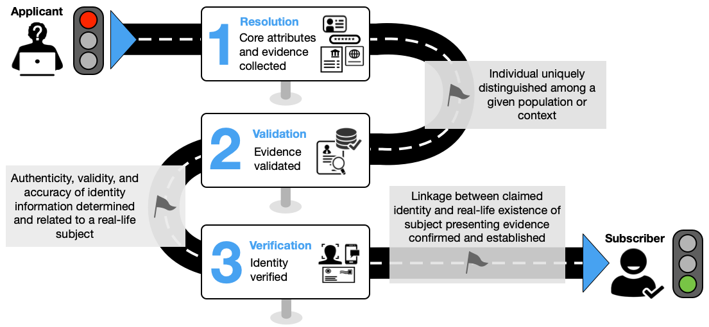

Tue, 26 Aug 2025 08:51:12 -0500
ABSTRACT
This guideline focuses on identity proofing and enrollment for use in digital authentication. During the process of identity proofing, an applicant provides evidence to a credential service provider (CSP) reliably identifying themselves, thereby allowing the CSP to assert that identification at a useful identity assurance level. This document defines technical requirements for each of three identity assurance levels. The guidelines are not intended to constrain the development or use of standards outside of this purpose. This publication supersedes NIST Special Publication (SP) 800-63A.
Keywords
authentication; credential service provider; digital authentication; identity proofing; federation.
Preface
This document and associated companion volumes — [SP800-63], [SP800-63B], and [SP800-63C] — provide guidance to organizations on the processes and technologies for managing digital identities at designated levels of assurance.
This document provides requirements for the identity proofing of individuals at each identity assurance level (IAL) for the purposes of enrolling them into an identity service or providing them access to online resources. It applies to the identity proofing of individuals over a network or in person.
Introduction
This section is informative.
One of the challenges of providing online services is being able to associate a set of activities with a single known individual. Situations in which it is important to reliably establish an association with a real-life subject include accessing sensitive government services, executing financial transactions, when required by regulation (e.g., the financial industry’s Customer Identification Program requirements), and when needed to establish accountability for high-risk actions (e.g., changing the release rate of water from a dam).
These guidelines define identity proofing as the process of establishing a relationship between a subject accessing online services and a real-life person to some degree of assurance. For the purposes of this document, the terms “subject” and “person” refer only to natural persons, not non-person entities, organizations, or things. This document provides guidance for federal agencies, third-party Credential Service Providers (CSPs), and other organizations that provide or use identity proofing services.
Expected Outcomes of Identity Proofing
The expected outcomes of identity proofing include:
- Identity resolution: Determine that the claimed identity corresponds to a single, unique individual within the context of the population of users served by the CSP or online service.
- Evidence validation: Confirm that supplied identity evidence is genuine, authentic, and accurate.
- Attribute validation: Confirm the accuracy of the core attributes, which are the minimum set of attributes required to complete identity proofing and provide services.
- Identity verification: Confirm that the applicant is the genuine owner of the presented evidence and attributes.
- Identity enrollment: Enroll the identity-proofed applicant into the CSP’s identity service as a subscriber.
- Fraud mitigation: Detect, respond to, and prevent access to benefits, services, data, or assets using a fraudulent identity.
Identity proofing services are expected to incorporate privacy-enhancing principles (e.g., data minimization) and employ good usability practices to minimize the burden on applicants while still accomplishing the expected outcomes.
Identity Assurance Levels
Assurance (confidence) in a subscriber’s identity is established using the processes associated with the identity assurance levels (IAL) defined in these guidelines. Each successive IAL builds on the requirements of lower IALs in order to achieve increased assurance.
No identity proofing: There is no requirement to link the applicant to a specific, real-life person. Evidence collection is not required; attributes may or may not be validated; and identity verification is not conducted. This does not exclude attributes from being validated as part of other business processes, but attribute validation is not required for access.
IAL1: The identity proofing process supports the real-world existence of the claimed identity and provides some assurance that the applicant is associated with that identity. Core attributes are obtained from identity evidence or self-asserted by the applicant. All core attributes (see Sec. 2.2) are validated against authoritative or credible sources, and steps are taken to confirm that the attributes are associated with the person undergoing the identity proofing process. Identity proofing is performed using remote or on-site processes, with or without the attendance of a CSP representative. Upon the successful completion of identity proofing, the applicant is enrolled into a subscriber account and any authenticators can then be bound to the account, including subscriber-provided authenticators. IAL1 is designed to limit highly scalable attacks (e.g., automated enrollment attacks) and to protect against synthetic identities and attacks using compromised personal information.
IAL2: IAL2 requires collecting additional evidence and more rigorous processes for validating evidence and verifying identities, including enhanced processes to confirm that the applicant is the rightful owner of the presented evidence. Like IAL1, identity proofing at IAL2 can be performed using remote or on-site processes, with or without the attendance of a CSP representative. In addition to those threats addressed by IAL1, IAL2 is designed to limit scaled and targeted attacks and to protect against basic evidence falsification, evidence theft, and social engineering tactics.
IAL3: IAL3 adds the requirements for a trained CSP representative (i.e., proofing agent) to interact directly with the applicant as part of an on-site attended identity proofing session and the collection of at least one biometric characteristic. The successful on-site identity proofing session concludes with the enrollment of the applicant into a subscriber account and the delivery of one or more authenticators bound to that account. IAL3 is designed to limit more sophisticated attacks, and protect against advanced evidence falsification, theft, repudiation, and more advanced social engineering tactics.
Notations
This guideline uses the following typographical conventions in text:
- Specific terms in CAPITALS represent normative requirements. When these same terms are not in CAPITALS, the term does not represent a normative requirement.
- The terms “SHALL” and “SHALL NOT” indicate requirements to be followed strictly in order to conform to the publication and from which no deviation is permitted.
- The terms “SHOULD” and “SHOULD NOT” indicate that among several possibilities, one is recommended as particularly suitable without mentioning or excluding others, that a certain course of action is preferred but not necessarily required, or that (in the negative form) a certain possibility or course of action is discouraged but not prohibited.
- The terms “MAY” and “NEED NOT” indicate a course of action permissible within the limits of the publication.
- The terms “CAN” and “CANNOT” indicate a possibility and capability — whether material, physical, or causal — or, in the negative, the absence of that possibility or capability.
Document Structure
This document is organized as follows. Each section is labeled as either normative (i.e., mandatory for compliance) or informative (i.e., not mandatory).
- Section 1 introduces the document. This section is informative.
- Section 2 describes requirements for identity proofing. This section is normative.
- Section 3 describes general requirements for IALs. This section is normative.
- Section 4 describes requirements for specific IALs. This section is normative.
- Section 5 describes subscriber accounts. This section is normative.
- Section 6 provides security considerations. This section is informative.
- Section 7 provides privacy considerations. This section is informative.
- Section 8 provides customer experience considerations. This section is informative.
- The References section contains a list of publications that are cited in this document. This section is informative.
- Appendix A provides a non-exhaustive list of types of identity evidence grouped by strength. This appendix is informative.
- Appendix B contains a selected list of abbreviations used in this document. This appendix is informative.
- Appendix C contains a glossary of selected terms used in this document. This appendix is informative.
- Appendix D contains a summarized list of changes in this document’s history. This appendix is informative.
Identity Proofing Overview
This section is normative.
This section provides an overview of the identity proofing and enrollment process, as well as requirements to support the resolution, validation, and verification of the identity claimed by an applicant. It also provides guidelines on additional aspects of the identity proofing process. These requirements are intended to ensure that the claimed identity exists in the real world and that the applicant is the individual associated with that identity.
These guidelines provide multiple methods by which resolution, validation, and verification can be accomplished, as well as multiple types of identity evidence that support the identity proofing process. CSPs and organizations SHOULD provide options when implementing their identity proofing services and processes to promote access for applicants with different means, capabilities, and technologies. These options SHOULD include accepting multiple types and combinations of identity evidence, supporting multiple data validation sources, enabling multiple methods for verifying identity, providing multiple identity proofing types, and offering exception handling for applicants (e.g., trusted referees, applicant references).
CSPs SHALL evaluate the risks associated with each identity proofing option offered (e.g., identity proofing types, validation sources, assistance mechanisms) and implement mitigating fraud controls, as appropriate. At a minimum, CSPs SHALL design each option such that the options provide comparable assurance in aggregate.
Requirements are typically expressed in these guidelines as responsibilities of the CSP unless otherwise noted. CSP requirements may be performed by a single entity or may include several component services so that all CSP responsibilities are fulfilled.
Identity Proofing and Enrollment
The intent of identity proofing is to ensure that the applicant involved in the identity proofing process is who they claim to be to a stated level of confidence. This document presents a three-step process for CSPs to identity-proof applicants at designated assurance levels. The first step is identity resolution, which consists of collecting appropriate identity evidence and attribute information to determine whether the applicant is a unique identity in the population served by the CSP and a real-life person. The second step is identity validation, which confirms the authenticity, accuracy, and validity of the evidence and attribute information collected in the first step. The third step is identity verification, which confirms that the applicant presenting the identity evidence is the same individual to whom the evidence was issued. In most cases, upon successfully identity proofing an applicant to the designated IAL, the CSP establishes a unique subscriber account for the applicant (now a subscriber in the identity service), which allows one or more authenticators to be bound to the proven identity in the account.
Identity proofing can be part of an organization’s business processes to determine the suitability or entitlement to a benefit or service, though such determinations are outside of the scope of these guidelines.
Process Flow
This subsection is informative.
Figure 1 provides an illustrative example of the three-step identity proofing process.
Fig. 1. Identity proofing process

The following steps present a common workflow example of remote unattended identity proofing and are not intended to represent a normative processing workflow model.
-
Resolution
- The CSP collects one or two pieces of identity evidence of appropriate strength.
- The CSP collects any additional core attributes, as needed, from the applicant to supplement those contained in the presented identity evidence.
-
Validation
- The CSP confirms that the presented evidence is authentic, accurate, and valid.
- The CSP validates the attributes obtained in step 1 by checking them against authoritative or credible validation sources, as described in Sec. 2.4.2.4.
-
Verification
- The CSP employs an approved identity verification process to confirm that the applicant is the genuine owner of the presented identity evidence.
-
Enrollment
Upon the successful completion of the three identity proofing steps, a notification of proofing is sent to a validated address, and the applicant can be enrolled into a subscriber account with the CSP, as described in Sec. 5. A subscriber account includes at least one validated address (e.g., phone number, mailing address) that can be used to communicate with the subscriber about their account. Additionally, one or more authenticators are bound to the proven identity in the subscriber account.
Identity Proofing Roles
Different individuals can play different roles within the proofing process. To support the consistent implementation of these guidelines, the following identity proofing roles are defined:
- Proofing agent: An agent of the CSP who is vetted and trained to attend on-site or remote identity proofing sessions and make limited, risk-based decisions (e.g., visually inspecting identity evidence and determining it has not been altered). See Sec. 3.13 for minimum training requirements for proofing agents.
- Trusted referee: An agent of the CSP, a third-party service, or a relying party (RP) who is vetted and trained to make risk-based decisions regarding an applicant’s identity proofing case when that applicant is unable to meet the expected requirements of a defined IAL proofing process. Requirements for trusted referees are contained in Sec. 3.15.1. In contrast to proofing agents, trusted referees receive additional training and resources to support exception handling scenarios, including when applicants do not possess the required identity evidence or the attributes on the evidence do not all match the claimed identity (e.g., due to a recent name or address change).
- Applicant reference: A representative of the applicant who can vouch for the identity of the applicant, specific attributes related to the applicant, or conditions relative to the context of the individual (e.g., emergency status, homelessness). An applicant reference does not act on behalf of the applicant in the identity proofing process but can support claims of identity. Requirements for applicant references are contained in Sec. 3.15.3.
- Process assistant: An individual who provides support services (e.g., translation, transcription, or accessibility support) to assist the applicant in the identity proofing process but does not support decision-making or risk-based evaluation. Since the process assistant is not involved in decision-making there are no requirements in these guidelines for this role.
CSPs SHALL identify which of the above roles are applicable to their identity service and SHALL provide training and support resources consistent with the requirements and expectations provided in Sec. 3.
Identity Proofing Types
For the purposes of this document, identity proofing types are defined by the combination of technologies, communication channels, and identity proofing roles employed by a CSP. Identity proofing types are characterized based on two factors: where the identity proofing takes place and whether the process is attended by an agent of the CSP.
- Remote unattended identity proofing: Identity proofing conducted where the resolution, validation, and verification processes are completely automated, and interaction with a proofing agent or trusted referee is not required. The location and devices used in the proofing process are not controlled by the CSP.
- Remote attended identity proofing: Identity proofing conducted where the applicant completes resolution, validation, and verification steps through a secure video session with a proofing agent or trusted referee. The location and devices used in the proofing process are not controlled by the CSP.
- On-site unattended identity proofing: Identity proofing conducted where an individual interacts with a controlled workstation or kiosk, but interaction with a proofing agent or trusted referee is not required. The process is fully automated but at a physical location and on devices controlled by the CSP.
- On-site attended identity proofing: Identity proofing conducted in a physical setting where the applicant completes the entire identity proofing process (i.e., resolution, validation, and verification) in the presence of a proofing agent or trusted referee. The proofing agent or trusted referee can be co-located with the user or interact with the user via a kiosk or device. The physical location and devices are controlled by the CSP.
The requirements at each assurance level are structured to allow CSPs to implement different combinations of identity proofing types to meet the requirements of different assurance levels, as appropriate. CSPs SHOULD offer the combination of identity proofing types that best addresses the needs of the populations served by their identity service and the risk posture of the RPs that use their service.
Core Attributes
The identity proofing process involves the presentation and validation of the minimum attributes necessary to accomplish identity proofing, including what is needed to complete resolution, validation, and verification. The CSP determines and documents the set of attributes that it considers to be core attributes, as specified in Sec. 3.1. CSPs SHALL include a government identifier and SHOULD include the following in their set of core attributes for identity proofing at any IAL:
- First name: The applicant’s given name.
- Middle name or initial: The applicant’s middle name or initial, as applicable.
- Last name: The applicant’s last name or family name, as appropriate.
- Date of birth: The date on which the applicant was born.
- Physical or digital address: A physical (i.e., mailing address) or digital (e.g., phone number or email) address at which the applicant can receive communications related to the proofing process.
Additional attributes MAY be added to these as required by the CSP and RP. The CSP and RP SHALL document all core attributes in trust agreements and practice statements. Following a privacy risk assessment, a CSP MAY request additional attributes that are not required to complete identity proofing, but that may support other RP business processes. See Sec. 3.3 for details on privacy requirements for requesting additional attributes.
Identity Resolution
Identity resolution involves the CSP’s collection of the minimum amount of identity evidence and attribute information that is needed for identity proofing and to distinguish a unique identity in the population served. Identity resolution is the starting point in the overall identity proofing process, including the initial detection of potential fraud.
Identity Evidence and Attributes
Identity evidence is information or documentation that supports the real-world existence of the claimed identity. Identity evidence may be physical (e.g., a driver’s license) or digital (e.g., a mobile driver’s license or digital assertion).
Identity evidence collection supports the identity validation process and consists of two steps: 1) the presentation of identity evidence by the identity proofing applicant to the CSP and 2) the determination by the CSP that the presented evidence meets the applicable strength requirements.
Evidence Strength Requirements
This section defines the requirements for identity evidence at each strength. The strength of a piece of identity evidence is determined by:
- The level of rigor associated with its issuance process
- The ability to be validated to a given level of confidence, including accuracy and authenticity checks
- The ability to support one or more of the identity verification methods presented in Sec. 2.5.1
Appendix A of this document provides a non-exhaustive list of possible evidence types grouped by strength.
Fair Evidence Requirements
To be considered FAIR, identity evidence SHALL meet all of the following requirements:
- There is a reasonable expectation that the issuing source of the evidence confirmed the claimed identity by following formal procedures designed to provide assurance that the claimed identity is associated with the subject, such as evidence issued by financial institutions that have customer identity verification obligations under the Customer Identification Program (CIP) rule or procedures for establishing a mobile phone account with a mobile network operator (MNO).
- The evidence has an issuance process that results in the delivery of the evidence to the person to whom it relates, such as delivery to a postal address, issuance in person, or through a protected remote provisioning process.
- The evidence contains the name of the claimed identity.
- The evidence contains at least one reference number, a facial image or other biometric characteristic, or sufficient attributes to uniquely identify the person to whom it relates.
- The evidence contains physical (e.g., security printing, optically variable features, holograms) or digital (e.g., digitally signed assertions, addressable SIM or ESIM) security features that make it difficult to reproduce.
- Core attributes on the evidence can be validated against information held by an authoritative or credible source, as described in Sec. 2.4.2.4.
- The evidence can be validated through an approved method, as provided in Sec. 2.4.2.2.
- The evidence can support the identity verification process, as described in Sec. 2.5.1.
Strong Evidence Requirements
In order to be considered STRONG, identity evidence SHALL meet all of the following requirements:
- There is a reasonable expectation that the issuing source of the evidence confirmed the claimed identity by following written procedures (e.g., identity proofing at IAL2 or above) designed to provide assurance that the claimed identity is associated with the subject. Additionally, these procedures are subject to recurring oversight by regulatory or publicly accountable institutions, such as states, the Federal Government, and some regulated industries.
- The evidence has an issuance process that results in the delivery of the evidence to the person to whom it relates, such as delivery to a postal address, issuance in person, or through a protected remote provisioning process.
- The evidence contains the name of the claimed identity.
- The evidence contains a reference number or other attributes that uniquely identify the person to whom it relates.
- The evidence contains a facial image or other biometric characteristic of the person to whom it relates.
- The evidence contains physical (e.g., security printing, optically variable features, holograms) or digital security (e.g., digitally signed assertions, addressable SIM or ESIM) features that make it difficult to reproduce.
- Core attributes on the evidence can be validated against information held by authoritative or credible sources, as described in Sec. 2.4.2.4.
- The evidence can be validated through an approved method, as provided in Sec. 2.4.2.2.
- The evidence can support the identity verification process, as described in Sec. 2.5.1.
Superior Evidence Requirements
In order to be considered SUPERIOR, identity evidence SHALL meet all of the following requirements:
- The issuing source of the evidence confirmed the claimed identity by following written procedures (e.g., identity proofing at IAL2 or above) designed to enable it to have high confidence that the claimed identity is associated with the subject. Additionally, these procedures are subject to recurring oversight by regulatory or publicly accountable institutions, such as states, the Federal Government, and some regulated industries.
- The identity evidence contains attributes and data objects that are cryptographically protected and can be validated using approved cryptography through verification of a digital signature applied by the issuing source.
- The issuing source had the subject participate in an attended enrollment and identity proofing process that confirmed their physical existence.
- The evidence has an issuance process that results in the delivery of the evidence to the person to whom it relates, such as delivery to a postal address, issuance in person, or through a protected remote provisioning process.
- The evidence contains the name of the claimed identity.
- The evidence contains at least one reference number that uniquely identifies the person to whom it relates.
- The evidence contains a facial image or other biometric characteristic of the person to whom it relates.
- The evidence contains physical (e.g., security printing, optically variable features, holograms) or digital security (e.g., digitally signed assertions, addressable SIM or ESIM) features that make it difficult to reproduce.
- The evidence can be validated through an approved method, as provided in Sec. 2.4.2.2.
- The evidence can support the identity verification process, as described in Sec. 2.5.1.
Identity Evidence and Attribute Validation
The goal of identity evidence validation is to determine that the collected identity evidence is genuine and valid. The goal of attribute validation is to confirm the accuracy of all the core attributes.
This document uses the term “valid” to recognize that evidence can remain a useful means to prove identity, even if it is expired or was issued outside of a determined time frame. CSPs define their policy for addressing expired evidence as part of the CSP practice statement described in Sec. 3.1, and RPs determine whether this is acceptable for accessing their online services.
Identity evidence validation involves examining the presented evidence to confirm that it is authentic (i.e., not forged or altered), accurate (i.e., the information on the evidence is correct), and valid (i.e., unexpired or within the CSP’s defined timeframe for issuance or expiration). Attribute validation involves confirming the accuracy of the core attributes, whether obtained from presented evidence or self-asserted. The following subsections provide acceptable methods for evidence and attribute validation.
Evidence Validation
The CSP SHALL validate the authenticity, accuracy, and validity of presented evidence by confirming that:
- The evidence is in the correct format and includes complete information for the identity evidence type
- The evidence does not show signs of being counterfeit or tampered with
- The evidence contains physical or digital security features
- The core attributes and data fields necessary to determine authenticity on the evidence are accurate
Evidence Validation Methods
Acceptable methods for validating presented evidence are:
- Visual and tactile inspection by trained personnel for on-site identity proofing
- Visual inspection by trained personnel for remote identity proofing
- Automated document validation processes using appropriate technologies
- Cryptographic verification of the source and integrity of digital evidence or attribute data objects
For some digital evidence (e.g., MNO/phone accounts), there is not a physical piece of evidence that can be validated visually or physically. Authenticity is confirmed by validating the identity attributes associated with that account and phone number with an issuing or credible source, such as by validating a digitally signed assertion from the issuer or querying an attribute validation service with access to that account information.
Attribute Validation
The CSP SHALL validate all core attributes (Sec. 2.2), whether obtained from identity evidence or self-asserted by the applicant, with an authoritative or credible source (Sec. 2.4.2.4).
Validation Sources
The CSP SHALL use authoritative or credible sources that meet the following criteria.
An authoritative source is the issuing source of identity evidence or attributes or has direct access to the information maintained by issuing sources. Examples of issuing sources include state departments of motor vehicles for driver’s license data and the Social Security Administration for Social Security cards and numbers. An example of an authoritative source that provides or enables direct access to issuing sources is the American Association of Motor Vehicle Administrators’ Driver’s License Data Verification (DLDV) Service.
A credible source has access to attribute information that can be traced to an authoritative source or maintains identity attribute information obtained from multiple sources that is correlated for accuracy, consistency, and currency. Credible sources are subject to regulatory oversight (e.g., the Fair Credit Reporting Act).
Identity Verification
The goal of identity verification is to establish the linkage between the claimed validated identity and the real-life applicant engaged in the identity proofing process to a specified level of confidence. In other words, verification provides assurance that the applicant presenting the evidence is the rightful owner of that evidence.
Identity Verification Methods
The CSP SHALL verify the linkage between the claimed identity to the applicant engaged in the identity proofing process through one or more of the following methods.
- Confirmation code verification: The individual is able to demonstrate control of a piece of identity evidence through the return of a confirmation code, consistent with the requirements specified in Sec. 3.8.
- Authentication and federation protocols: The individual is able to demonstrate control of a digital account (e.g., online bank account) or signed digital assertion through the use of authentication or federation protocols. This can be done in person, through presentation of the credential to a device or reader, or during a remote identity proofing session.
- Transaction verification: An individual is able to demonstrate control of a piece of evidence by returning a value based on a microtransaction made between the CSP and the issuing source of the evidence (e.g., a micro-deposit to verify ownership of a financial account).
- Visual facial image comparison — on-site attended: The proofing agent and applicant interact directly during the identity proofing process. The proofing agent performs a visual comparison of the facial image presented on identity evidence to the face of the applicant engaged in the identity proofing event.
- Visual facial image comparison — remote attended or remote unattended: The proofing agent performs a visual comparison of the facial image presented on identity evidence or stored by the issuing source to the facial image of the applicant engaged in the identity proofing event. The proofing agent may interact directly with the applicant during some or all of the identity proofing process or may conduct the comparison at a later time using a captured video or photograph and the uploaded copy of the evidence.
- Automated biometric comparison: Automated biometric comparison (e.g., facial recognition or other fully automated algorithm-driven biometric comparison) can be performed for onsite or remote identity proofing events. The facial image or other biometric characteristic (e.g., fingerprints, palm prints, iris and retina patterns, voiceprints, vein patterns) on the identity evidence or stored in authoritative records is compared to the equivalent biometric sample collected from the applicant during the identity proofing event.
Knowledge-based verification (KBV) or knowledge-based authentication SHALL NOT be used for identity verification.
Identity Proofing Requirements
This section is normative.
This section provides requirements for CSPs that operate identity proofing and enrollment services, including requirements for identity proofing at each of the IALs. This section also includes additional requirements for federal agencies, regardless of whether they operate their own identity service or use an external CSP.
Sections 4.1, 4.2, and 4.3 provide the requirements and guidelines for identity proofing at a specific IAL. Section 4.4 includes a summarized list of these requirements by IAL in Table 1.
Identity Service Documentation and Records
The CSP SHALL conduct its operations according to documented procedures or a practice statement that details all identity proofing processes as they are implemented to achieve the defined IAL. These documented procedures SHALL include, at a minimum:
- A complete service description, including the particular steps that the CSP follows to identity-proof applicants at each offered assurance level
- The CSP’s policy for providing notice to applicants about the types of identity proofing processes available, the evidence and attribute collection requirements for the IALs offered by the CSP, the purpose for collecting personal information (see Sec. 3.3.2), and the purposes for collecting, using, and retaining biometrics (see Sec. 3.1.11)
- The CSP’s policy for ensuring that the identity proofing process concludes in a timely manner once the applicant has met all of the requirements
- The types of evidence that the CSP accepts and the justification for how the evidence fulfills the strength requirements of the level at which it will be accepted by the CSP
- The CSP’s policy and process for validating and verifying identity evidence, including training and qualification requirements for personnel who serve in identity proofing roles, as provided in Sec. 2.1.2
- The specific technologies that the CSP employs for evidence validation and verification
- The CSP’s policy and processes for supporting applicants who lack sufficient identity evidence for the required IAL (Sec. 3.15) and for addressing identity proofing exceptions and errors
- The attributes that the CSP considers to be core attributes (Sec. 2.2) and the authoritative and credible sources it uses for validating those attributes (Sec. 2.4.2.4)
- The CSP’s policy for managing and communicating service changes to RPs, such as changes in data sources, integrated vendors, or biometric algorithms
- The CSP’s approach to fraud management (see Sec. 3.2), including its policy and process for identifying and remediating suspected or confirmed fraudulent accounts and communicating such information to RPs and affected individuals
- The CSP’s policy for any conditions that would require reverification of the user (e.g., account recovery, account abandonment, regulatory “recertification” requirements)
- The CSP’s policy for conducting privacy risk assessments, including the timing of its periodic reviews and specific conditions that will trigger an updated privacy risk assessment (see Sec. 3.3.1)
- The CSP’s policy for assessing customer experience, including the testing methods employed, timing of its periodic reviews, and any specific conditions that will trigger an out-of-cycle review (see Sec. 3.4)
- The CSP’s policy for the retention, protection, and deletion of all personal, sensitive, and biometric data, including the treatment of all such data if the CSP ceases operation or merges or transfers operations to another CSP
- The CSP’s policy for reporting and updating performance metrics, as described in Sec. 3.5.2 of SP 800-63
- The CSP’s policy for accessing or removing a subscriber’s account in the event of their death or incapacitation (see Sec. 5)
CSPs SHALL make their documented procedures or practice statements available to RPs that use their identity service. CSPs SHOULD make a summarized version of their documented procedures or practice statements publicly available.
SP 800-63C describes the use of trust agreements to define requirements between an identity provider (IdP), CSP, and RP in a federated relationship. CSP practice statements MAY be included directly in these agreements.
Fraud Management
A critical aspect of the identity proofing process is to mitigate fraudulent attempts to gain access to benefits, services, data, or assets that are protected by identity management systems. Resolution, validation, and verification processes are designed to mitigate many types of attacks. However, with the constantly changing threat environment, layering additional checks and controls can provide increased confidence in proofed identities and additional protections against advanced and emerging types of attacks. The ability to identify, detect, and resolve instances of potential fraud is a critical functionality for CSPs and RPs.
CSP Fraud Management
- CSPs SHALL establish and maintain a fraud management program that provides fraud identification, detection, investigation, reporting, and resolution capabilities. The specific capabilities and details of this program SHALL be documented within their CSP practice statement.
- CSPs SHALL conduct a privacy risk assessment of all fraud checks and fraud mitigation technologies prior to implementation.
- The CSP SHALL establish a self-reporting mechanism and investigation capability for subjects who believe they have been the victim of fraud or an attempt to compromise their involvement in the identity proofing processes.
- CSPs SHALL analyze all remote proofing communication channels to look for high-risk indicators (e.g., blocklisted proxies and IP addresses).
- The CSP SHALL take measures to prevent unsuccessful applicants from inferring the accuracy of any self-asserted information with that confirmed by authoritative or credible sources.
- CSPs SHALL monitor the performance of their fraud checks and fraud mitigation technologies to ensure continued effectiveness in mitigating fraud risks.
- CSPs SHALL establish a technical or process-based mechanism to communicate suspected and confirmed fraudulent events to RPs.
- CSPs SHALL implement a death records check for all identity proofing processes by confirming with a credible, authoritative, or issuing source that the applicant is not deceased. Such checks can aid in preventing synthetic identity fraud, the use of stolen identity information, and exploitation by a close associate or relative.
- CSPs SHOULD implement the following fraud checks for their identity proofing processes based on their available identity proofing types, selected technologies, evidence, and user base:
- SIM swap detection: Confirm that the phone number used in the identity proofing process has not been recently ported to a new user or device. Such checks can provide an indication that a phone or device was compromised by a targeted attack.
- Device or account tenure check: Evaluate the length of time a phone service subscription or other account (e.g., email account) has existed without substantial modifications or changes. Such checks can provide additional confidence in the reliability of a device or piece of evidence used in the identity proofing process.
- Mailing address check: Determine whether the mailing address is a known virtual Post Office (PO) Box or has other high-risk characteristics.
- Device fingerprinting: Incorporate device fingerprinting checks to protect against scaled and automated attacks and enrollment duplication. Device fingerprinting is the process of collecting and analyzing the hardware and software characteristics of a device in order to create a unique identifier (i.e., fingerprint) for the device.
- Transaction analytics: Evaluate anticipated transaction characteristics (e.g., IP addresses, geolocations, transaction velocities) to identify anomalous behaviors or activities that can indicate a higher risk or a potentially fraudulent event. Fraud velocity checks monitor the frequency and pattern of transactions over a specific period of time to identify unusual activity associated with transaction data. Such checks can protect against scaled and automated attacks, as well as indicate whether specific attack patterns are being executed on identity systems.
- Fraud indicator check: Evaluate records (e.g., reported, confirmed, or historical fraud events) to determine whether there is an elevated risk related to a specific applicant, applicant’s data, or device. Such checks can indicate identity theft or compromise. Where such information is collected, aggregated, or exchanged across commercial platforms and made available for use by RPs and other CSPs, users SHALL be made aware of any privacy implications based on a privacy risk assessment. This also applies to all websites that report user activity to federal RPs.
- CSPs SHOULD periodically employ independent testing (e.g., red teaming exercises) to validate the effectiveness of their fraud mitigation measures.
- CSPs SHOULD consider the recency of fraud-related data when factoring such data into fraud prevention capabilities and decisions.
- For attended proofing processes, CSPs SHALL train proofing agents to detect indicators of fraud and SHALL provide proofing agents and trusted referees with tools to flag suspected fraudulent events for further treatment and investigation.
- Collusion is possible whenever CSP representatives are directly involved in proofing processes or decisions. CSPs SHALL implement insider threat controls to detect and prevent collusion involving CSP representatives that are directly involved with or can intervene in proofing processes or decisions.
- CSPs SHOULD communicate fraud events in real time to RPs through methods such as shared signaling, as described in Sec. 4.8 of [SP800-63C].
- CSPs MAY employ KBV as part of its fraud management program.
- CSPs MAY implement fraud mitigation measures as compensating controls. When this is done, these SHALL be documented as deviations from the normative guidance of these guidelines and SHALL be conveyed to all RPs through a Digital Identity Acceptance Statement (DIAS) prior to integration. See Sec. 3.4.4 of [SP800-63] for more information about the DIAS.
CSPs that employ artificial intelligence (AI) or machine learning (ML) as part of their identity service SHALL adhere to the requirements provided in Sec. 3.8 of [SP800-63], as applicable.
RP Fraud Management
- RPs SHALL establish a point of contact with whom CSPs can interact and communicate fraud data.
- RPs SHALL conduct a privacy risk assessment (see Sec. 3.3.1) of any CSP fraud checks and mitigation technologies to identify potential privacy risks or unintended harms. Federal agency RPs SHALL implement this consistent with the requirements contained in Sec. 3.7.
- RPs SHOULD include any requirements for fraud checks and fraud mitigation technologies in trust agreements with their CSPs.
- RPs SHALL conduct periodic reviews of their CSP’s fraud management program, fraud checks, and fraud technologies to adjust thresholds, review investigations into fraud events, and evaluate the effectiveness and efficacy of fraud controls.
- RPs SHALL review all fraud mitigation measures that have been deployed as compensating or supplemental controls by CSPs to align with their internal risk tolerance and acceptance. The RP SHALL record the CSP’s compensating controls in their own DIAS prior to integration.
- Pursuant to applicable laws and regulations, RPs SHOULD establish a mechanism to communicate the outcomes of fraud reports and investigations, including both positive and negative results, to CSPs and other partners in order to allow them to improve their own fraud identification, mitigation, and reporting capabilities.
- RPs SHOULD establish a fraud management program for digital identity management consistent with their mission, regulatory environment, systems, applications, data, and resources.
- Informed by risks identified in a privacy risk assessment, the RP MAY also request additional attributes beyond what a CSP provides as its core attributes to combat fraud or to support other business processes.
Treatment of Fraud Check Failures
The effectiveness of fraud checks and mitigation technologies will vary based on numerous contributing factors, including the data sources used, the technologies used, and — perhaps most importantly — the applicant population. Therefore, it is critical to have well-structured and documented processes addressing failures that arise from the fraud management measures. The following requirements apply to handling these failures:
- CSPs SHALL establish and document actions and practices related to each of their fraud checks and provide these actions and practices to RPs.
- CSPs SHALL establish procedures for redress to allow applicants to resolve issues associated with fraud checks and mitigation technologies. See Sec. 3.6 of [SP800-63] for more information about redress.
- The CSP SHOULD offer trusted referee services to applicants who fail fraud checks in unattended remote processes. If trusted referees are offered to applicants who fail fraud checks in unattended remote processes, the trusted referees SHALL be provided with a summary of the results of the fraud failures to inform their risk-based decision-making processes.
General Privacy Requirements
The following privacy requirements apply to all CSPs that provide identity services at any IAL.
Privacy Risk Assessment
- The CSP SHALL conduct and document a privacy risk assessment for the processes used for identity proofing and enrollment. At a minimum, the privacy risk assessment SHALL assess the risks associated with:
- Processing personal information for the purposes of identity proofing, enrollment, or fraud management, including identity attributes, biometrics, images, video, scans, or copies of identity evidence
- Additional steps that the CSP takes to verify the identity of an applicant beyond the mandatory requirements specified herein
- Processing of personal information for purposes outside of the scope of identity proofing and enrollment, except to comply with law or legal processes
- The retention schedule for identity records and personal information
- Processing non-personal information that could be used to identify a person when aggregated or processed by an algorithm (e.g., AI or ML tools)
- Personal information that is processed by a third-party service on behalf of the CSP
- Based on the results of its privacy risk assessment, the CSP SHALL document the measures it takes to maintain the disassociability, predictability, manageability, confidentiality, integrity, and availability of any personal information it collects or processes. In determining such measures, the CSP SHOULD apply relevant guidance and standards, such as the NIST Privacy Framework [NIST-Privacy] and NIST SP 800-53 [SP800-53].
- The CSP SHALL reassess privacy risks and update its privacy risk assessment any time it makes changes to its identity service that affect the processing of personal information.
- The CSP SHALL review its privacy risk assessment periodically, as documented in its practice statement, to ensure that it accurately reflects the current risks associated with the collection and processing of personal information.
- The CSP SHALL make a summary of its privacy risk assessment available to any RPs that use its services. The summary SHALL be in sufficient detail to enable such RPs to make reasonable determinations about privacy risks associated with the CSPs services and to complete their own privacy risk assessments.
- The CSP SHALL perform a privacy risk assessment for the processing of any personal information maintained in subscriber accounts (see Sec. 5).
Additional Privacy Protective Measures
- The processing of personal information SHALL be limited to the minimum necessary to validate the existence of the claimed identity, associate the claimed identity with the applicant, mitigate fraud, and provide RPs with attributes that they may use to make authorization decisions.
- The CSP SHALL provide privacy training to all personnel and any third-party service providers who have access to sensitive information associated with the CSP’s identity service.
- The CSP MAY collect a Social Security number (SSN) as an attribute when necessary for identity resolution. Knowledge of an SSN is not sufficient to act as evidence of identity, nor is it considered an acceptable method of verifying possession of the Social Security card when used as evidence. If the SSN is collected on behalf of a federal, state, or local government agency, the CSP SHALL provide notice to the applicant for the collection in accordance with applicable laws.
- At the time of collection, the CSP SHALL provide explicit notice to the applicant regarding the purpose for collecting any attributes and personal information. Such a notice SHALL include whether the personal information and attributes are voluntary or mandatory to complete the identity proofing process, the specific attributes and other sensitive data that the CSP intends to store in the applicant’s subsequent subscriber account, the consequences of not providing the attributes, and the details of any records retention requirement if one is in place, including an applicant’s right to request data deletion or engage in other forms of redress.
- CSPs SHOULD implement techniques that protect an applicant’s privacy based on the privacy considerations in Sec. 7.
General Customer Experience Requirements
CSPs assess the elements of their identity services to identify processes and technologies that may result in customer experience challenges for the populations they serve. If risks to customer experience are identified, CSPs proactively employ mitigations that will reduce or eliminate these issues consistent with their assurance levels and risk posture.
The following requirements apply to all CSPs that provide identity services at any IAL:
- The CSP SHALL assess the elements of its identity proofing processes to identify processes or technologies that can result in customer experience challenges, particularly if those challenges prevent the CSP from consistently delivering identity proofing services to all users served by an RP.
- CSPs SHALL provide RPs with a summary of their customer experience assessments that includes information about common challenges or issues faced by users.
- Based on the results of its assessment, the CSP SHALL document any measures it takes to mitigate the possible access challenges.
- The CSP SHALL reassess the customer experience risks periodically and any time the CSP makes changes to its identity service that affect the processes or technologies that impact customer experience.
- The CSP SHALL NOT make applicant participation in these risk assessments mandatory.
General Security Requirements
- Each online transaction within the identity proofing process, including transactions that involve third parties, SHALL occur over an authenticated protected channel.
- The CSP SHALL implement automated attack protections for the identity proofing process, such as bot detection, mitigation, and management solutions; behavioral analytics; web application firewall settings; and network traffic analysis.
- All personal information that is collected as part of the identity proofing process SHALL be protected to maintain the confidentiality and integrity of the information, including the encryption of data at rest and the exchange of information using authenticated protected channels.
- The CSP SHALL assess the information security and privacy risks associated with operating its identity service, according to the NIST Risk Management Framework [NIST-RMF] or equivalent risk management guidelines. At a minimum, the CSP SHALL apply appropriate controls consistent with the NIST SP 800-53 [SP800-53] moderate baseline, regardless of IAL.
- The CSP SHALL assess risks associated with its use of third-party services and apply appropriate controls, as provided in the [SP800-161] Cybersecurity Supply Chain Risk Management Practices for Systems and Organizations.
Redress Requirements
- The CSP SHALL provide mechanisms for the redress of applicant complaints and problems that arise from the identity proofing process, including proofing failures, delays, difficulties, and the recovery of a compromised subscriber account (e.g., as a result of a scam or fraud).
- These redress mechanisms SHALL be easy for applicants to find and use.
- The CSP SHALL assess the mechanisms for their efficacy in achieving a resolution of complaints or problems.
See Sec. 3.6 of [SP800-63] for more information about redress.
Additional Requirements for Federal Agencies
The following requirements apply to federal agencies, regardless of whether they operate their own identity service or use an external CSP as part of their identity service:
- The agency SHALL consult with their Senior Agency Official for Privacy (SAOP) to determine whether the collection of personal information, including biometrics, to conduct identity proofing triggers Privacy Act requirements.
- The agency SHALL consult with their SAOP to determine whether the collection of personal information, including biometrics, to conduct identity proofing triggers E-Government Act of 2002 [E-Gov] requirements.
- The agency SHALL publish a System of Records Notice (SORN) to cover such collections, as applicable.
- The agency SHALL publish a Privacy Impact Assessment (PIA) to cover such collections, as applicable.
- The agency SHOULD consult with public affairs and communications professionals within their organization to determine whether a communications or public awareness strategy should be developed to accompany the implementation of any new process or update to an existing process, including requirements associated with identity proofing. Such strategies should consider the use of materials that describe how to use the technology associated with the service, a Frequently Asked Questions (FAQs) page, prerequisites to participate in the identity proofing process (e.g., required evidence), or media (e.g., webinars, live or pre-recorded information sessions) to support adoption of the identity service and provide applicants with a mechanism to communicate questions, issues, and feedback.
- If the agency uses a third-party CSP, the agency SHALL conduct its own PIA and use the CSP’s privacy risk assessment as input.
Requirements for Confirmation Codes
This section includes requirements for CSPs that support the use of confirmation codes.
Confirmation codes are used to confirm that an applicant has access to a postal address, email address, or phone number for the purposes of future communications. Confirmation codes delivered to a postal or phone address can also be used as an identity verification option at IALs 1 and 2, as described in Sec. 4.1.6 and Sec. 4.2.6.
Confirmation codes used for these purposes SHALL include at least 6 decimal digits (or equivalent) from an approved random bit generator (see Sec. 3.2.12 of [SP800-63B]). The confirmation code may be presented as numeric or printable ASCII representation for manual entry, a secure (e.g., https) link containing a representation of the confirmation code, or a machine-readable optical label (e.g., QR code) that contains the confirmation code.
Confirmation codes SHALL be valid for at most:
- 21 days when sent to a validated postal address within the contiguous United States
- 30 days when sent to a validated postal address outside of the contiguous United States
- 10 minutes when sent to a validated telephone number (SMS or voice)
- 24 hours when sent to a validated email address
Upon its use, the CSP SHALL invalidate the confirmation code.
Requirements for Continuation Codes
Continuation codes are used to reestablish an applicant’s linkage to an incomplete identity proofing or enrollment process. The continuation code provides a temporary secret that can connect one session to another. A typical scenario would involve an applicant starting an identity proofing process online (e.g., remote unattended) but needing to complete it through an in-person (e.g., on-site attended) event. This on-site service is often offered by a third party or through a channel that may not have the technology to support authentication of the applicant with established CSP-issued authenticators. If applicants are able to leverage established authenticators at all steps in the identity proofing process, then a continuation code is not needed.
As such, CSPs MAY use continuation codes when an applicant is unable to complete all of the steps necessary to be successfully identity-proofed and enrolled into the CSP’s identity service in a single session, particularly when switching between different identity proofing types. Continuation codes are intended to be maintained offline (e.g., printed or written down) and stored in a secure location by the applicant for use in reestablishing linkage to a previous, incomplete session. In order to facilitate the authentication of the applicant to a subsequent session with the CSP, the CSP SHOULD first bind an authenticator to a record or account that was established for the applicant prior to the cessation of the initial session.
If continuation codes are used, the following requirements apply:
- Continuation codes SHOULD be delivered in-session but MAY be delivered out-of-band to a physical mailing address, phone number, or email address.
- Continuation codes SHALL include at least 64 bits from an approved random bit generator (see Sec. 3.2.12 of [SP800-63B]).
- The continuation code MAY be presented as numeric or printable ASCII representation for manual entry or as a machine-readable optical label (e.g., QR code).
- The verification of continuation codes SHALL be subject to throttling requirements, as provided in Sec. 3.2.2 of [SP800-63B].
- Continuation codes SHALL be stored in hashed form using a Federal Information Processing Standards (FIPS)-approved or NIST-recommended one-way function.
- Upon its use, the CSP SHALL invalidate the continuation code.
Since substantial time may elapse between when an applicant receives their continuation code and when they are able to complete the proofing process, expiry is not defined in these guidelines. This will need to be defined by the CSP based on their processes, technologies, and partnerships.
Requirements for Notifications of Identity Proofing
Notifications of proofing are sent to the applicant’s validated address to inform them that they have been successfully identity-proofed and provide them with information about the identity proofing event and subsequent enrollment. Additionally, the notification explains how the recipient can dispute their involvement in the identity proofing events.
The following requirements apply to notifications of proofing at any IAL:
- SHALL be sent to a validated postal address or phone number at all IALs or MAY be sent to a validated email address at IAL1
- SHALL include details about the identity proofing event, including the name of the identity service and the date on which the identity proofing was completed
- SHALL provide clear instructions, including contact information, on actions for the recipient to take if they repudiate their participation in the identity proofing event
- SHALL provide information about how the organization or CSP protects the security and confidentiality of the information it collects
- SHALL provide information about any responsibilities that the recipient has as a subscriber of the identity service
- SHOULD provide instructions on how to access their subscriber account or information about how the subscriber can update the information contained in that account
If a subscriber repudiates having been identity-proofed by the identity service, the CSP or RP SHALL respond in accordance with its established fraud management and redress policies.
Requirements for the Use of Biometrics
Biometrics refers to the automated recognition of individuals based on their biological and behavioral characteristics, such as facial features, fingerprints, voice patterns, keystroke patterns, angle of holding a smart phone, screen pressure, typing speed, mouse movements, or gait. As used in these guidelines, biometric data refers to any analog or digital representation of biological and behavioral characteristics at any stage of their capture, storage, or processing, including the transmission of biometric data to other applications or service partners. This includes live biometric samples from applicants (e.g., facial images, fingerprint) as well as biometric references obtained from evidence (e.g., facial image on a driver’s license, fingerprint minutiae template on identification cards). As applied to the identity proofing process, CSPs can use biometrics to verify that an individual is the rightful subject of identity evidence, to bind an individual to a new piece of identity evidence or credential, or for the purposes of deduplication. These requirements also address the additional privacy impacts associated with the use of biometrics in the identity proofing process.
The following requirements apply to CSPs that employ biometrics as part of their identity proofing process:
- CSPs SHALL provide clear, publicly available information about all uses of biometrics, including what biometric data is collected, how it is stored and protected, and how to remove biometric data consistent with applicable laws and regulations.
- CSPs SHALL obtain explicit informed consent to collect and use biometrics from all applicants.
- CSPs SHALL store a record of the subscriber’s consent for biometric use and associate it with the subscriber’s account.
- CSPs SHALL have a documented and publicly available deletion process and default retention period for all biometric information. Retention periods SHALL be consistent with applicable regulations, policies, and statutes for the regions and sectors that the CSP serves.
- CSPs SHOULD support the deletion of all of a subscriber’s biometric information upon the subscriber’s request, except where otherwise restricted by regulation, law, or policy. CSPs that do not support biometric deletion requests SHALL publicly document the regulatory, statutory, or risk-based justification for their policy.
- CSPs SHALL have their biometric recognition and attack detection algorithms periodically tested by independent entities (e.g., accredited laboratories or research institutions) for their performance characteristics, including performance across demographic groups. In addition, the CSP SHOULD conduct internal testing on biometric algorithms based on the update schedule of the provider.
- CSPs SHALL assess the performance and demographic impacts of employed biometric technologies in conditions that are substantially similar to the operational environment and user base of the system. The user base is defined by both the expected users and the devices they are expected to use. When such assessments include real-world users, participation by users SHALL be voluntary.
- CSPs SHALL meet the following performance thresholds if one-to-one (1:1) comparison algorithms are used for verification against a claimed identity:
- False match rate: 1:10,000 or better
- False non-match rate: 1:100 or better
- CSPs MAY use one-to-many (1:N) identification in support of resolution or deduplication, pursuant to a privacy risk assessment. In 1:N scenarios, CSPs SHALL meet a minimum performance threshold for false positive identification of 1:1,000 or better.
- A 1:N search of an applicant’s collected biometric characteristics against a database is done to determine whether the applicant is already present in the database, possibly under a different name. The false positive identification rate (FPIR) refers to the proportion of 1:N searches in which a biometric system incorrectly identifies another person as a match, which is a false positive result. The performance metric of 1:1,000 means that a false positive outcome occurs for no more than 1 in every 1,000 searches. Tests that demonstrate this requirement SHALL employ a gallery no smaller than 90 % of the current or intended operational size (N).
- CSPs that make use of 1:N biometric identification for resolution, deduplication, or fraud detection purposes SHALL NOT decline a user’s enrollment without a manual review to confirm the automated search results and confirm that the results are not a false positive identification (e.g., twins submitting face photographs for different accounts with the same CSP).
- Biometric verification technologies SHALL provide performance for applicants of different demographic types that is no more than 25 % worse than the performance for the overall population. For example, if the measured false non-match rate (FNMR) for the overall population is 0.006, the FNMR for a specific demographic group cannot exceed 0.0075. Similarly, if the false match rate (FMR) for the overall population is 0.0001, the FMR for each demographic group cannot exceed 0.000125. The biometric system SHALL be configured with a fixed threshold; it is not feasible to change the threshold for each demographic group. Demographic categories to be considered SHALL include sex, age, and skin tone when these factors affect biometric performance.
- All biometric performance tests SHALL be conformant to ISO/IEC 19795-1:2021 and ISO/IEC 19795-10:2024, including demographics testing.
- CSPs SHALL make the results of their biometric algorithm performance and biometric system operational test results publicly available. The CSP MAY provide these test results in summary form if the results indicate performance against the defined metrics in these guidelines and across the tested demographic groups.
The following requirements apply to CSPs that collect biometric characteristics from applicants:
- CSP SHALL collect biometric characteristics in a way that provides reasonable assurance that the biometric characteristic is collected from the applicant and not another subject.
- When collecting and comparing biometric characteristics remotely, the CSP SHALL implement presentation attack detection (PAD) capabilities that meet the impostor attack presentation accept rate (IAPAR) performance metric of <0.07 to confirm the genuine presence of a live human being and to mitigate spoofing and impersonation attempts. All biometric presentation attack detection tests SHALL be conformant to ISO/IEC 30107-3:2023.
- When collecting biometric characteristics on-site, the CSP SHALL have the operator view the biometric source (e.g., fingers, face) for the presence of unexpected non-natural materials and perform such inspections as part of the proofing process.
Requirements for Visual Facial Image Comparison
Proofing agents and trusted referees that support identity verification will need to be able to compare the facial portraits on presented evidence to the applicant claiming the identity represented in that evidence. As such, when CSPs offer this visual facial image comparison as a verification option, the following requirements apply:
- Proofing agents and trusted referees SHALL be trained to conduct visual facial image comparison. This training SHALL include techniques and methods for identifying facial characteristics, unique traits, and other indicators of matches or non-matches between an applicant and their presented evidence.
- Proofing agents and trusted referees SHALL be assessed on their ability to conduct visual facial image comparisons. Additionally, proofing agents and trusted referees SHALL be reassessed on an annual basis and remedially trained, if needed. Training SHALL be designed to reflect potential real-world attack scenarios, such as comparing applicants to images of relatives, twins, and individuals with a similar appearance.
- CSPs SHALL provide proofing agents and trusted referees that conduct visual facial comparisons during remote attended transactions with resources that support accurate comparisons, such as high-quality image feeds, high-definition monitors, and image analysis software.
- CSPs SHALL document their training and assessment procedures for visual image comparisons and make them available to RPs upon request.
- These requirements SHALL apply for visual facial image comparisons done as manual reviews for failures of automated biometric comparisons (e.g., failure of 1:N checks conducted for resolution or deduplication).
Requirements for the Validation of Physical Evidence
The validation of physical evidence can be conducted by optical capture and inspection (often called document authentication or “doc auth”) or via visual inspection by a trained proofing agent or trusted referee. CSPs can employ either or both processes to evaluate the authenticity of identity evidence.
The following requirements apply to CSPs that employ optical capture and inspection for the purposes of determining document authenticity:
- Automated evidence validation technology SHALL meet the following performance measures:
- Document false acceptance rate (DFAR) of 0.1 or less
- Document false rejection rate (DFRR) of 0.1 or less
- If a Machine Readable Zone (MRZ) or barcode is present on the evidence, the optical capture and inspection SHALL compare the MRZ data to the printed data on the evidence for consistency.
- CSPs SHALL implement live capture of documents during the validation process and SHALL implement passive or active document presence checks (also called document liveness). Live capture techniques confirm that the document is physically present and that the image captured during the identity proofing session is not a manipulated digital copy. For additional requirements to prevent the injection of modified media (i.e., digitally generated video or images of evidence), see Sec. 3.14.
- CSPs SHALL assess the performance of employed optical capture and inspection technologies in conditions that are substantially similar to the operational environment and the types of evidence presented by the user base of the system. These tests SHALL account for all available identity evidence types that the CSPs allow to be validated using optical capture and inspection technology. If subscribers’ documents, personal information, or images are used as part of the testing, it SHALL be on a voluntary basis and with subscriber notification and consent.
- CSPs SHOULD have their evidence validation technology periodically tested by independent entities (e.g., accredited laboratories or research institutions) for their performance characteristics.
- CSPs SHALL make the results of their testing publicly available.
These requirements apply to technologies that capture and validate images of physical identity evidence. They do not apply to validation techniques that rely on PKI or other cryptographic technologies that are embedded in the evidence themselves.
The following requirements apply to CSPs that employ visual inspection of evidence by trained proofing agents or trusted referees for the purposes of determining document authenticity:
- Proofing agents and trusted referees SHALL be trained and provided with the resources to visually inspect all forms of evidence supported by the CSP. This training SHALL include:
- Authentic layouts and topography of evidence types
- Physical security features (e.g., raised letters, holographic features, microprinting)
- Techniques for assessing features (e.g., tools to be used, where tactile inspection is needed, manipulation required to view specific features)
- Common indications of tampering (e.g., damage to the lamination, image modification)
- Proofing agents and trusted referees SHALL be assessed regarding their ability to visually inspect evidence based on their training. Additionally, proofing agents and trusted referees SHALL be reassessed on an annual basis or whenever significant new threats to the evidence validation process are identified and remedially trained as needed.
- Proofing agents and trusted referees SHALL be provided with specialized tools and equipment to support the visual inspection of evidence (e.g., magnifiers, ultraviolet lights, barcode readers) as appropriate for the identity evidence type.
- Proofing agents and trusted referees who conduct visual inspections via remote means SHALL be provided with devices and internet connections that support sufficiently high-quality imagery to be able to effectively inspect presented evidence. In these instances, the visual validation SHOULD be supported by automated document validation technologies that provide additional confidence in the authenticity of the evidence (e.g., submitting and validating evidence in advance of an attended remote session).
- CSPs SHALL document their training and assessment procedures for visual inspections of evidence and make them available to RPs upon request.
Due to the potential number and permutations of identity evidence, these guidelines do not attempt to provide a comprehensive list of security features. CSPs need to provide evidence validation training that is specific to the types of identity evidence they accept.
Digital Injection Prevention and Forged Media Detection
Many emerging attacks on both attended and unattended remote identity proofing processes pair digital injection attacks with increasingly effective and available generative AI tools. These AI tools are used to create or modify media that contain images or videos of applicants and evidence (i.e., deepfakes) to defeat automated document validation processes, biometric operations, and visual comparisons done by proofing agents. Injection attacks insert modified or forged media between the capture point (e.g., a device) and the element conducting the comparison or other operation (e.g., a server running the algorithms, a workstation used by a proofing agent).
All types of remote identity proofing are in some way vulnerable to these forms of attack, whether the attack is on the remote optical capture and inspection components, the automated biometric mechanisms, or the video systems used in remote attended processes.
A biometric comparison performed with a captured sample does not prevent these attacks. However, live document capture and presentation attack detection mechanisms do provide some protection from injection and forged media attacks by making the injection of viable forged media more challenging. Not only does the media need to be inserted into the communication channel between the applicant endpoint and the CSP comparison component, but the forged media would also need to sufficiently defeat any passive or active presentation attack detection mechanisms implemented by the CSP. However, even these mechanisms are not sufficient to address all possible cases of these kinds of attacks.
The following requirements apply to all remote identity proofing processes (i.e., unattended and attended) that make use of optical capture and recognition tools for evidence validation, remote biometric capture, and video sessions:
- CSPs SHALL implement technical controls to increase confidence that digital media is being produced by a genuine sensor during the proofing process (e.g., detect the presence of a virtual camera, device emulator, or a jailbroken device).
- CSPs SHALL analyze all digital media submitted during the identity proofing process for artifacts and indicators of potential modification, manipulation, tampering, or forgery. Automated image analysis algorithms SHALL be tested against available attack artifacts (i.e., forged and manipulated images and videos) and genuine media to provide a baseline of performance and to determine the expected rate of false positives and false negatives generated by the system. The kinds of available attack artifacts that were tested and the corresponding false negative rates SHALL be documented and made available to RPs upon request. Algorithmic analysis of media and automated decisioning SHOULD be augmented by manual reviews to address detection errors.
- CSPs SHALL only use authenticated protected channels for the exchange of data during remote identity proofing processes.
- CSPs SHOULD introduce a passive means of detecting forged or manipulated media for all capture scenarios.
- CSPs SHOULD authenticate capture sensors or implement device attestation to increase the confidence in a device being used to transmit digital media as part of a remote identity proofing process.
- CSPs SHOULD analyze digital media for signatures of generative AI algorithms and deepfake tools that are known to be used to create forged digital media.
The following additional requirements apply to remote attended collection scenarios:
- CSPs SHALL train proofing agents and trusted referees to look for indications of manipulated media (e.g., high latency, synchronization issues, inconsistent skin tone and resolution).
- CSPs SHALL introduce random “human-in-the-loop” cues into their capture processes to increase the possibility of forged or manipulated media being detected (e.g., by requesting user movements or requesting that the user move objects between the capture sensor and their face).
Exception and Error Handling
Throughout the identity proofing process, there are many points at which errors or failures may occur. Such exceptions to a standard identity proofing workflow include process failures (e.g., when a user does not possess the required evidence), technical failures (e.g., when an integrated service is not available), and failures due to user error (e.g., when an applicant is unable to capture a clear image of their identity evidence using remote validation tools).
In order to increase the accessibility of their identity proofing services and address customer experience challenges, CSPs SHALL document their operational processes for dealing with errors and handling exceptions. These documented processes SHOULD include providing trusted referees to support applicants who are otherwise unable to meet the requirements of IALs 1 and 2. Additionally, CSPs SHOULD support the use of applicant references who can vouch for an applicant’s attributes, conditions, or identity.
Requirements for Trusted Referees
Trusted referees are used to increase access to online services by facilitating the identity proofing and enrollment of individuals who are otherwise unable to prove their identities using the usual identity proofing process for a specific IAL. A non-exhaustive list of examples of individuals who may need the assistance of trusted referees includes those who do not possess and cannot obtain the required identity evidence, persons with disabilities, older individuals, persons experiencing homelessness, individuals with limited access to online services or computing devices, persons without a bank account or with limited credit history, victims of identity theft, individuals displaced or affected by natural disasters, and children under 18. Trusted referees can be provided by the CSP, a third party, or an RP. The following requirements apply whenever trusted referees are used:
- The CSP SHALL notify the public of the availability of trusted referee services and how such services are obtained.
- The CSP SHALL establish written policies and procedures for the use of trusted referees as part of its practice statement, as specified in Sec. 3.1.
- The CSP SHALL train and certify its trusted referees to make risk-based decisions that allow applicants to be successfully identity-proofed based on their unique circumstances. At a minimum, such training SHALL include:
- Document identification and validation, such as common templates, security features, layouts, and topography (see Sec. 3.13)
- Indicators of fraudulent documents, such as damage, tampering, modification, fabrication, or forgery (see Sec. 3.13)
- Facial image comparisons to verify applicants against presented documents (see Sec. 3.12)
- Indicators of social engineering exhibited by an applicant, such as distress, confusion, or coercion
- An annual review of the trusted referee’s abilities to visually inspect evidence and make visual facial image comparisons (see Sec. 3.12)
- The CSP SHALL establish a record of any identity proofing session that involves a trusted referee, including the reasons why a trusted referee was used (e.g., automated process failure, applicant request, established exception policy), the identity of the trusted referee, what evidence was presented, which processes were completed (e.g., validation or verification), and the trusted referee’s decision and, if negative, their rationale.
- The CSP MAY offer trusted referee services for either on-site attended or remote attended sessions. These sessions SHALL be consistent with the requirements of these proofing types based on the IAL of the proofing event.
Uses of Trusted Referees
Trusted referees offer a critical path for those who are unable to complete identity proofing by other means. However, given the number of possible failures that may occur within the proofing process, it is essential for CSPs to define the uses for which a trusted referee can be applied within their own service offerings. The following requirements apply to defining the integration of trusted referees into the identity proofing process:
- CSPs SHALL document which types of exceptions and failures are eligible for the use of a trusted referee.
- CSPs SHOULD offer trusted referee services for failures of automated verification processes (e.g., biometric comparisons).
- CSPs SHOULD offer trusted referee services for failures in completing automated validation processes, such as mismatched core attributes or the absence of the applicant in a record source. If a CSP offers trusted referees for this purpose, the following requirements apply:
- CSPs SHALL provide a policy for additional evidence types that may be used to corroborate core attributes or changes in core attributes.
- Trusted referees SHALL review additional evidence types for authenticity to the greatest degree allowed by the evidence.
- If no authoritative or credible records are available to support validation, the trusted referee MAY compare the attributes on additional pieces of evidence with the strongest piece of evidence available to corroborate the consistency of core attributes.
- If there is a partial mismatch of core attributes to authoritative records, the trusted referee SHALL review evidence that supports the legitimacy of the asserted attribute value (e.g., recent move or change of name).
Requirements for Applicant References
Applicant references are individuals who participate in the identity proofing of an applicant in order to vouch for the applicant’s identity, attributes, or circumstances related to the applicant’s ability to complete identity proofing. Applicant references are not agents of the CSP, but rather representatives of the applicant who have sufficient knowledge to aid in the completion of identity proofing when other forms of evidence, validation, and verification are not available.
If applicant references are supported at IAL1 or IAL2 the following requirements apply:
- The CSP SHALL notify the public of the allowability of applicant references and any requirements for the relationship between the reference and an applicant.
- The CSP SHALL establish written policies and procedures for the use of applicant references as part of its practice statement, as specified in Sec. 3.1.
- The CSP SHALL identity-proof an applicant reference to the same or higher IAL intended for the applicant. The CSP SHALL include the information collected, recorded, and retained for identity proofing the applicant references in its privacy risk assessment, as required in section Sec. 3.3.1.
- The CSP SHALL record the use of an applicant reference in the subscriber account and maintain a record of the applicant reference and their relationship to the applicant.
- The RP SHALL conduct a risk assessment to determine the applicability, business requirements, and potential risks associated with excluding or including applicant references for proofing events.
Uses of Applicant References
Applicant references can take several different actions to support an applicant in the identity proofing process, depending on the circumstances and context of the CSP and RP services. CSPs SHOULD offer the use of applicant references if the risks to the online service of doing so allow for it. If CSPs allow the use of applicant references, the CSPs and the RPs that use their services SHALL document all acceptable uses for applicant references in their contracts or trust agreements.
- The applicant reference MAY vouch for one or more claimed core attributes relative to the applicant as part of the evidence and attribute validation process.
- The applicant reference MAY vouch for the identity of the applicant in the absence of sufficient identity evidence.
- The applicant reference MAY vouch for a specific condition or status of an applicant relative to the identity proofing process (e.g., homelessness, disaster scenarios).
This information is intended to support risk determinations relative to the identity proofing event. Use of applicant reference statements to establish eligibility for status or benefits is outside of the scope of these guidelines.
In all instances, the CSP SHALL establish a record of the role that the applicant reference played in the process and document these actions sufficient to support any applicable legal and regulatory requirements. This MAY include:
- Capturing and recording the statements and assertions made by the applicant reference
- Capturing a digital signature or physical signature of the applicant reference
- Capturing consent and acknowledgement relative to the legal and liability impacts of the applicant reference’s statements
CSPs SHALL make available to the applicant reference clear and understandable information relative to the legal and liability impacts that may result from their participation as an applicant reference.
Establishing Applicant Reference Relationships
In many cases, there will be business, legal, or fraud prevention reasons to confirm the relationship between the applicant and an applicant reference. If such steps are deemed necessary by a risk assessment, the following requirements SHALL apply:
- The CSP and RP SHALL establish requirements for applicant reference relationship confirmation processes and document them in any contracts or trust agreements.
- The CSP SHALL make a list of acceptable evidence of relationship available to the applicant reference prior to initiating the relationship confirmation process.
- The CSP SHALL request evidence of the applicant’s relationship (e.g., notarized power of attorney, a professional certification).
- Upon successfully identity proofing an applicant, the CSP SHALL record the evidence used to confirm the applicant reference’s relationship to the applicant in the subscriber account.
Requirements for Interacting With Minors
The following requirements apply to all CSPs that provide identity proofing services to persons under the age of 18:
- The CSP SHALL establish a written policy and procedures as part of its practice statement for identity proofing minors who may not be able to meet the evidence requirements for a given IAL.
- When interacting with persons under the age of 13, the CSP SHALL ensure compliance with the Children’s Online Privacy Protection Act of 1998 [COPPA] or other laws and regulations that deal with the protection of minors, as applicable.
- CSPs SHALL support the use of applicant references when interacting with individuals under the age of 18.
Elevating Subscriber IALs
CSPs SHOULD allow subscribers to elevate IALs related to their subscriber accounts to support higher assurance transactions with RPs. For CSPs that support these functions, the following requirements apply:
- CSPs SHALL document their approved approaches for elevating assurance levels in their practice statements.
- CSPs SHALL require subscribers to authenticate at the highest authentication assurance level (AAL) available on their account prior to initiating the upgrade process.
- CSPs SHALL collect, validate, and verify additional evidence, as mandated to achieve the higher IAL.
- CSPs SHOULD avoid collecting, validating, and verifying previously processed evidence, though they MAY do so based on an extended period of account inactivity, indicators of fraud, or if evidence has become invalidated since the original proofing event.
Identity Assurance Level Requirements
This section is normative.
Identity Assurance Level 1 Requirements
Identity proofing processes at IAL1 allow for a range of acceptable techniques to detect fraudulent claims to identities by malicious actors while facilitating user adoption, minimizing the rejection of legitimate users, and reducing application departures. The use of biometric matching (e.g., automated comparison of the applicant’s facial image to a facial portrait on supplied evidence) is optional at IAL1.
Proofing Types
- IAL1 identity proofing MAY be delivered through any proofing type, as described in Sec. 2.1.3.
- CSPs MAY combine proofing types and their stated requirements to create hybrid processes. For example, a CSP might leverage remote unattended identity proofing validation processes in advance of a remote attended session where the verification will take place. If such steps are combined, CSPs SHALL document their hybrid process and state how the applicable requirements for each of the employed proofing types are met.
Evidence Collection
For identity proofing at IAL1, the CSP SHALL collect:
- One piece of:
- FAIR evidence that can be digitally validated or that includes a facial portrait or other biometric or
- STRONG evidence or
- SUPERIOR evidence.
Attribute Collection
The CSP SHALL collect all core attributes, including at least one government identifier. Validated evidence is the preferred source of identity attributes. If the presented identity evidence does not provide all of the attributes that the CSP considers to be core attributes, it MAY collect attributes that are self-asserted by the applicant.
Evidence Validation
Each piece of evidence presented SHALL be validated using one of the following methods:
- Confirming the authenticity of digital evidence by interrogating the digital security features (e.g., signatures on assertions or data)
- Confirming the authenticity of physical evidence using automated scanning technology that can detect physical security features, as described in Sec. 3.14
- Confirming the integrity of physical security features on presented evidence through visual inspection by a proofing agent using real-time or asynchronous processes (e.g., offline manual review)
- Confirming the integrity of physical security features through physical and tactile inspection by a proofing agent at an on-site location
Attribute Validation
- The CSP SHALL validate all core attributes and the government identifier against an authoritative or credible source to determine accuracy.
- CSPs SHOULD evaluate attributes obtained from different sources (e.g., presented evidence, self-asserted, authoritative or credible sources) for consistency.
- CSPs SHOULD validate any reference numbers on the presented identity evidence, if available.
Verification Requirements
The CSP SHALL verify the applicant’s ownership of one piece of evidence using one of the following methods:
- Confirming the applicant’s ability to return a confirmation code delivered to a validated address associated with the evidence
- Confirming the applicant’s ability to return a microtransaction value delivered to a validated financial or similar account
- Confirming the applicant’s ability to successfully complete an authentication and federation protocol equivalent to AAL2/FAL2 or higher to access an account related to the identity evidence
- Comparing the applicant’s facial image to a facial portrait on evidence via an automated comparison
- Visually comparing the applicant’s facial image to a facial portrait on evidence or in records associated with the evidence during an on-site attended session (i.e., in-person with a proofing agent), a remote attended session (i.e., live video with a proofing agent), or an asynchronous process (i.e., visual comparison made by a proofing agent at a different time). If the comparison is performed asynchronously at a later time, the CSP SHALL implement PAD and passive or active document presence checks to increase confidence that both the live applicant and physical documents are present during the submission or capture event.
- Using automated means to compare a facial image represented on or stored in the identity evidence or in records associated with the evidence to a live sample provided by the applicant
Remote Unattended Requirements
There are no additional requirements for remote unattended identity proofing beyond the requirements specified in Sec. 2, 3, and 4.
Remote Attended Requirements
- During the video session, the applicant SHALL remain in view of the proofing agent during each step of the proofing process.
- The video quality SHALL be sufficient to support the necessary steps in the validation and verification processes, such as inspecting evidence and comparing the applicant to the evidence.
- The proofing agent SHALL be trained to identify signs of manipulation, coercion, or social engineering occurring during the session.
- CSPs MAY record and maintain video sessions for fraud prevention and prosecution purposes pursuant to a privacy risk assessment, as defined in Sec. 3.3.1. If the CSP records a video session, the following further requirements apply:
- The CSP SHALL notify the applicant of the recording prior to initiating a recorded session.
- The CSP SHALL gain consent from the applicant prior to initiating a recorded session.
- The CSP SHALL publish their retention schedule and deletion processes for all video records.
- The CSP SHALL implement injection protection and modified media controls, as defined in Sec. 3.14.
- The CSP SHALL provide proofing agents with a method or mechanism to flag events for potential fraud.
On-Site Attended Requirements
- The CSP SHALL provide a physical setting in which on-site identity proofing sessions are conducted.
- All devices SHALL be protected by appropriate baseline security features comparable to FISMA moderate controls, including malware protection, administrator-specific access controls, and software update processes.
- CSP proofing agents SHALL be trained to identify signs of manipulation, coercion, or social engineering occurring during the on-site session.
- CSPs MAY record and maintain video sessions for fraud prevention and prosecution purposes pursuant to a privacy risk assessment, as defined in Sec. 3.3.1. If the CSP records a video session, the following additional requirements apply:
- The CSP SHALL notify the applicant of the recording prior to initiating a recorded session.
- The CSP SHALL gain consent from the applicant prior to initiating a recorded session.
- The CSP SHALL publish their retention schedule and deletion processes for all video records.
- The CSP SHALL provide proofing agents with a method or mechanism to covertly flag events for potential fraud.
On-Site Unattended Requirements
- All devices SHALL be safeguarded from tampering through observation by CSP representatives and/or physical and digital tamper prevention features.
- All devices SHALL be protected by appropriate baseline security features comparable to FISMA moderate controls, including malware protection, administrator-specific access controls, and software update processes.
- All devices SHALL be inspected periodically by trained technicians to deter tampering, modification, or damage.
- CSPs MAY record and maintain video recordings of on-site unattended identity proofing sessions for fraud prevention and prosecution purposes pursuant to a privacy risk assessment, as defined in Sec. 3.3.1. If the CSP records a video session, the following additional requirements apply:
- The CSP SHALL notify the applicant of the recording prior to initiating a recorded session.
- The CSP SHALL gain consent from the applicant prior to initiating a recorded session.
- The CSP SHALL publish their retention schedule and deletion processes for all video records.
Notification of Proofing
Upon the successful completion of identity proofing at IAL1, the CSP SHALL send a notification of proofing to a validated address for the applicant, as specified in Sec. 3.10.
Initial Authenticator Binding
Once a unique subscriber account is established for the applicant (now subscriber) in the CSP’s identity system, one or more authenticators can be associated (i.e., bound) to the subscriber’s account. To minimize the need for account recovery, CSPs SHOULD encourage subscribers to bind at least two separate means of authentication. See Sec. 5 for more information about subscriber accounts and Sec. 4.1.2.1 of [SP800-63B] for more information on binding authenticators.
- The CSP SHALL provide the ability for the applicant to bind an authenticator using one of the following methods:
- Remote enrollment of a subscriber-provided authenticator consistent with the requirements for the authenticator type, as defined in Sec. 4.1.3 of [SP800-63B]
- Distribution of a physical authenticator to a validated address
- Distribution or on-site enrollment of an authenticator
- If authenticators are bound outside of a single protected session with the user, the CSP SHALL confirm the presence of the intended subscriber through one of the following methods:
- Return of a continuation code
- Comparison against a biometric collected at the time of proofing
Identity Assurance Level 2 Requirements
IAL2 identity proofing includes additional evidence, validation, and verification requirements to better mitigate impersonation attacks and other identity proofing errors relative to IAL1. IAL2 can be achieved through different types of identity proofing (e.g., remote unattended, remote attended), and identity verification at IAL2 can be accomplished with or without the use of biometrics. This section presents three different pathways to align with IAL2 outcomes and requirements: IAL2 Verification — Non-Biometric Pathway, IAL2 Verification — Biometric Pathway, and IAL2 Verification — Digital Evidence Pathway.
Proofing Types
- IAL2 identity proofing MAY be delivered through any identity proofing type, as described in Sec. 2.1.3.
- CSPs MAY combine identity proofing types and their stated requirements to create hybrid processes. For example, a CSP might leverage remote unattended identity proofing validation processes in advance of a remote attended session where the verification will take place. If such steps are combined, CSPs SHALL document their hybrid process and state how the applicable requirements for each of the employed proofing types are met.
Evidence Collection
For identity proofing at IAL2, the CSP SHALL collect:
- One piece of FAIR evidence and one piece of STRONG evidence or
- Two pieces of STRONG evidence or
- One piece of SUPERIOR evidence.
Attribute Collection
The CSP SHALL collect all core attributes, including at least one government identifier. Validated evidence is the preferred source of identity attributes. If the presented identity evidence does not provide all of the attributes that the CSP considers to be core attributes, it MAY collect attributes that are self-asserted by the applicant.
Evidence Validation
- Each piece of FAIR or STRONG evidence that is presented SHALL be validated using one of the following techniques:
- Confirming the authenticity of the digital evidence by interrogating the digital security features (e.g., signatures on assertions or data)
- Confirming the authenticity of the physical evidence using automated scanning technology that can detect physical security features
- Confirming the integrity of any physical security features through a visual inspection by a proofing agent using a real-time or asynchronous process (e.g., offline manual review)
- Confirming the integrity of any physical security features through physical and tactile inspection by a proofing agent at an on-site location
- Each piece of SUPERIOR evidence SHALL be validated through the cryptographic verification of the evidence contents and the issuing source, including digital signature verification and the validation of any trust chain back to a trust anchor. Any piece of SUPERIOR evidence that cannot be validated using this method MAY be considered STRONG evidence if it can be validated by using one of the techniques provided above.
Attribute Validation
- The CSP SHALL validate all core attributes by either:
- Comparing the government identifier and other core attributes against an authoritative or credible source to determine accuracy
- Validating the accuracy of digitally signed attributes that are contained on SUPERIOR evidence through the public key of the issuing source
- CSPs SHOULD evaluate attributes obtained from different sources (e.g., presented evidence, self-asserted, authoritative or credible sources) for consistency.
- CSPs SHOULD validate any reference numbers on the presented identity evidence, if available.
Verification Requirements
Verification pathways SHOULD be implemented consistent with relevant policy and be responsive to the use cases, populations, and threat environment of the online service being protected. CSPs SHOULD deploy more than one pathway to IAL2 verification and MAY combine pathways in order to achieve desired outcomes.
CSPs that offer multiple verification pathways SHALL record in the subscriber record which pathways were followed to achieve IAL2 and SHALL make that information available to RPs in the assertion, API, or as part of their trust agreement. When the Non-Biometric Pathway is used, the CSP SHALL additionally record whether a mailed confirmation code or a visual comparison of the applicant against evidence was used for verification.
IAL2 Verification — Non-Biometric Pathway
The IAL2 Non-Biometric Pathway provides verification methods that do not use an automated comparison of biometric samples provided by the applicant. This pathway can still involve the collection and verification of biometric data (e.g., visual comparison to a facial image contained on identity evidence performed by a proofing agent), but such comparisons are done through manual rather than automated means. Additional verification methods that do not require the use of automated biometric comparison are also included in the Digital Evidence Pathway requirements specified in Sec. 4.2.6.2. If provided as an option at IAL2, CSPs SHALL communicate their use of the Non-Biometric Pathway to all RPs that use their identity service.
- For remote attended, remote unattended, and on-site unattended identity proofing, the CSP SHALL verify the applicant’s ownership of all pieces of presented identity evidence. For on-site attended identity proofing, the CSP SHALL verify the applicant’s ownership of the strongest piece of presented identity evidence.
- Approved non-biometric methods for verifying FAIR evidence at IAL2 include:
- Confirming the applicant’s ability to return a confirmation code delivered to a validated address associated with the evidence (e.g., postal address, phone number)
- Visually comparing the applicant’s facial image to a facial portrait on the presented evidence (e.g., student or employee ID card) or in records associated with the evidence during an on-site attended session (i.e., in-person with a proofing agent), a remote attended session (i.e., live video with a proofing agent), or an asynchronous process (i.e., visual comparison made by a proofing agent at a different time)
- Approved non-biometric methods for verifying STRONG and SUPERIOR evidence at IAL2 include:
- Confirming the applicant’s ability to return a confirmation code delivered to a physical address (i.e., postal address) that was obtained from the evidence and validated with an authoritative source
- Visually comparing the applicant’s facial image to a facial portrait on the presented evidence or in records associated with the evidence during an on-site attended session (i.e., in-person with a proofing agent), a remote attended session (i.e., live video with a proofing agent), or an asynchronous process (i.e., visual comparison made by a proofing agent at a different time). If the comparison is performed asynchronously at a later time, the CSP SHALL implement PAD and passive or active document presence checks to increase confidence that both the live applicant and physical documents are present during the captured identity proofing event.
Delivering a confirmation code to a physical address combined with the requirement to validate the address with an authoritative source provides reasonable deterrence against scaled, high-volume attacks on identity proofing processes and substantially impacts the time-to-value for attackers. For this reason, mailed confirmation codes are a viable option for identity proofing at IAL2 when biometrics or visual comparisons fail or alternative means are required (e.g., due to a subscriber’s limited access to technology or services). Such delivery methods remain vulnerable to interception by close associates and family members and to other schemes (e.g., mail-forwarding fraud). Organizations that assess a high likelihood and impact of such attacks should offer other methods of verification or apply additional mitigating controls.
IAL2 Verification — Digital Evidence Pathway
The IAL2 Digital Evidence Pathway allows individuals to use digital forms of evidence as part of the verification process, such as digital credentials (sometimes referred to as digital identity documents) or digital accounts.
- For remote attended, remote unattended, and on-site unattended identity proofing, the CSP SHALL verify the applicant’s ownership of all pieces of presented identity evidence. For on-site attended identity proofing, the CSP SHALL verify the applicant’s ownership of the strongest piece of presented identity evidence.
- Approved digital evidence verification methods for FAIR evidence at IAL2 include:
- Confirming the applicant’s ability to return a microtransaction value delivered to a validated account (e.g., checking account owned by the applicant that has been validated by an authoritative or credible source)
- Confirming the applicant’s ability to return a confirmation code delivered to a validated digital address associated with the digital evidence (e.g., MNO/phone account)
- Confirming the applicant’s ability to successfully complete an authentication and federation protocol equivalent to AAL2/FAL2 to access an account related to the identity evidence
- Approved digital evidence verification methods for STRONG evidence at IAL2 involve confirming the applicant’s ability to successfully complete an authentication and federation protocol equivalent to AAL2/FAL2 or higher to access an account related to the identity evidence.
- Approved digital evidence verification methods for SUPERIOR evidence at IAL2 include confirming the applicant’s possession of the evidence through the use of a local activation factor and the presentation of a cryptographically verifiable attribute bundle.
This verification method is viable for SUPERIOR evidence that allows for local authentication events, such as subscriber-controlled wallets and PKI credentials on smart cards. SUPERIOR evidence that does not support these functions (e.g., ePassports) can still be used but must be verified through one of the other pathways.
IAL2 Verification — Biometric Pathway
The IAL2 Biometric Pathway supports the automated comparison of biometric samples provided by the applicant.
- For remote attended, remote unattended, and on-site unattended identity proofing, the CSP SHALL verify the applicant’s ownership of all pieces of presented identity evidence. For on-site attended identity proofing, the CSP SHALL verify the applicant’s ownership of the strongest piece of presented identity evidence.
- Approved methods for verifying FAIR, STRONG, and SUPERIOR evidence for use in the IAL2 Biometric Pathway include:
- Using automated means to compare a facial image represented on or stored in the identity evidence or in records associated with the evidence to a live sample provided by the applicant
- Using automated means to compare a biometric characteristic other than a facial image stored on the identity evidence or in records associated with the evidence to a live sample provided by the applicant
Remote Unattended Requirements
There are no additional requirements for remote unattended identity proofing beyond the requirements specified in Sec. 2, 3, and 4.
Remote Attended Requirements
- During the video session, the applicant SHALL remain in view of the proofing agent during each step of the proofing process.
- The video quality SHALL be sufficient to support the necessary steps in the validation and verification processes, such as inspecting evidence and comparing the user to the evidence.
- The proofing agent SHALL be trained to identify signs of manipulation, coercion, or social engineering occurring during the recorded session.
- CSPs MAY record and maintain video sessions for fraud prevention and prosecution purposes pursuant to a privacy risk assessment, as defined in Sec. 3.3.1. If the CSP records a video session, the following further requirements apply:
- The CSP SHALL notify the applicant of the recording prior to initiating a recorded session.
- The CSP SHALL gain consent from the applicant prior to initiating a recorded session.
- The CSP SHALL publish their retention schedule and deletion processes for all video records.
- The CSP SHALL implement injection protection and modified media controls, as defined in Sec. 3.14.
- The CSP SHALL provide proofing agents with a method or mechanism to flag events for potential fraud.
On-Site Attended Requirements
- The CSP SHALL provide a physical setting in which on-site identity proofing sessions are conducted.
- All devices SHALL be protected by appropriate baseline security features comparable to FISMA moderate controls, including malware protection, administrator-specific access controls, and software update processes.
- CSP proofing agents SHALL be trained to identify signs of manipulation, coercion, or social engineering occurring during the on-site session.
- CSPs MAY record and maintain video sessions for fraud prevention and prosecution purposes pursuant to a privacy risk assessment, as defined in Sec. 3.3.1. If the CSP records a video session, the following additional requirements apply:
- The CSP SHALL notify the applicant of the recording prior to initiating a recorded session.
- The CSP SHALL gain consent from the applicant prior to initiating a recorded session.
- The CSP SHALL publish their retention schedule and deletion processes for all video records.
- The CSP SHALL provide proofing agents with a method or mechanism to safely flag events for potential fraud.
On-Site Unattended Requirements
- All devices SHALL be safeguarded from tampering through observation by CSP representatives and/or physical and digital tamper prevention features.
- All devices SHALL be protected by appropriate baseline security features comparable to FISMA moderate controls, including malware protection, administrator-specific access controls, and software update processes.
- All devices SHALL be inspected periodically by trained technicians to deter tampering, modification, or damage.
- CSPs MAY record and maintain video recordings of on-site unattended identity proofing sessions for fraud prevention and prosecution purposes pursuant to a privacy risk assessment, as defined in Sec. 3.3.1. If the CSP records a video session, the following additional requirements apply:
- The CSP SHALL notify the applicant of the recording prior to initiating a recorded session.
- The CSP SHALL gain consent from the applicant prior to initiating a recorded session.
- The CSP SHALL publish their retention schedule and deletion processes for all video records.
Notification of Proofing
Upon the successful completion of identity proofing at IAL2, the CSP SHALL send a notification of proofing to a validated address for the applicant, as specified in Sec. 3.10. CSPs SHOULD send the notification of proofing to the applicant’s postal address.
Initial Authenticator Binding
Once a unique subscriber account is established for the applicant (now subscriber) in the CSP’s identity system, one or more authenticators can be associated (i.e., bound) to the subscriber’s account. To minimize the need for account recovery, CSPs SHOULD encourage subscribers to bind at least two separate means of authentication. See Sec. 5 for more information about subscriber accounts and Sec. 4.1.2.1 of [SP800-63B] for more information on binding authenticators.
- The CSP SHALL provide the ability for the applicant to bind an authenticator using one of the following methods:
- Remote enrollment of a subscriber-provided authenticator consistent with the requirements for the authenticator type, as defined in Sec. 4.1.3 of [SP800-63B]
- Distribution of a physical authenticator to a validated address
- Distribution or on-site enrollment of an authenticator
- If authenticators are bound outside of a single protected session with the user, the CSP SHALL confirm the presence of the intended subscriber through one of the following methods:
- Return of a continuation code
- Comparison against a biometric collected at the time of proofing
Identity Assurance Level 3
IAL3 adds additional rigor to the steps required at IAL2 and is subject to additional and specific processes, including the use of biometric information comparison, collection, and retention, to further protect the identity and RP from impersonation and other forms of identity fraud. In addition, identity proofing at IAL3 is performed onsite and attended by a proofing agent, as described in Sec. 2.1.2.
Proofing Types
IAL3 identity proofing SHALL only be delivered as on-site attended. The proofing agent MAY be co-located with the applicant or attend the identity proofing session via a CSP-controlled kiosk or device.
Evidence Collection
For identity proofing at IAL3, the CSP SHALL collect:
- One piece of FAIR evidence and one piece of STRONG evidence or
- Two pieces of STRONG evidence or
- One piece of SUPERIOR evidence.
Attribute Requirements
- The CSP SHALL collect all core attributes, including at least one government identifier. Validated evidence is the preferred source of identity attributes. If the presented identity evidence does not provide all of the attributes that a CSP considers to be core attributes, the CSP MAY collect attributes that are self-asserted by the applicant.
- The CSP SHALL collect and retain a biometric sample from the applicant during the identity proofing process to support account recovery and non-repudiation and to establish a high level of confidence that the same participant is present in the proofing and issuance processes, if done separately. CSPs MAY choose to periodically re-enroll user biometrics based on the modalities they use and the likelihood that subscriber accounts will persist long enough to warrant such a refresh.
Evidence Validation
- Each piece of FAIR or STRONG evidence that is presented SHALL be validated using one of the following techniques:
- Confirming the authenticity of the digital evidence by interrogating the digital security features (e.g., signatures on assertions or data)
- Confirming the authenticity of the physical evidence using automated scanning technology that can detect physical security features
- Confirming the integrity of any physical security features through a visual inspection by a proofing agent using a real-time or asynchronous process (e.g., offline manual review)
- Confirming the integrity of any physical security features through physical and tactile inspection by a proofing agent at an on-site location
- Each piece of SUPERIOR evidence SHALL be validated through the cryptographic verification of the evidence contents and the issuing source, including digital signature verification and the validation of any trust chain back to a trust anchor. Any piece of SUPERIOR evidence that cannot be validated using this method MAY be considered STRONG evidence if it can be validated by using one of the techniques provided above.
Attribute Validation
- The CSP SHALL validate all core attributes by either:
- Comparing the government identifier and other core attributes against an authoritative or credible source to determine accuracy or
- Validating the accuracy of digitally signed attributes that are contained on SUPERIOR evidence through the public key of the issuing source
- CSPs SHOULD evaluate attributes obtained from different sources (e.g., presented evidence, self-asserted, authoritative or credible sources) for consistency.
- CSPs SHOULD validate any reference numbers on the presented identity evidence, if available.
Verification Requirements
- The CSP SHALL verify the applicant’s ownership of the strongest piece of evidence (STRONG or SUPERIOR) by one of the following methods:
- Confirming the applicant’s ability to successfully authenticate to a physical device or application (e.g., a mobile driver’s license) and comparing a digitally protected and transmitted facial portrait to the applicant
- Comparing the applicant’s facial image to the facial portrait on the presented evidence via an automated comparison
- Visually comparing the applicant’s facial image to the facial portrait on the presented evidence during an on-site attended session or a remote attended session
- Performing an automated comparison of a stored biometric on the identity evidence or in the authoritative records associated with the evidence to a sample provided by the applicant
On-Site Attended Requirements — Colocated Agent
- The CSP SHALL provide a secure, physical setting in which on-site identity proofing sessions are conducted.
- The CSP SHALL provide sensors and capture devices for the collection of biometrics from the applicant.
- The CSP SHALL have the proofing agent view the source of the collected biometric for the presence of any non-natural materials (e.g., putty, glue).
- The CSP SHALL have the proofing agent collect the biometric samples in such a way that ensures the sample was collected from the applicant and no other source.
- The CSP SHALL ensure that all information systems and technology leveraged by proofing agents and trusted referees are protected consistent with at least FISMA moderate or comparable levels of controls, including physical controls for the proofing facility.
- CSP proofing agents SHALL be trained to identify signs of manipulation, coercion, or social engineering occurring during the on-site session.
- CSPs MAY record and maintain video sessions for fraud prevention and prosecution purposes pursuant to a privacy risk assessment, as defined in Sec. 3.3.1. If the CSP records a session, the following additional requirements apply:
- The CSP SHALL notify the applicant of the recording prior to initiating a recorded session.
- The CSP SHALL gain consent from the applicant prior to initiating a recorded session.
- The CSP SHALL publish their retention schedule and deletion processes for all video records.
- The CSP SHALL provide proofing agents with a method or mechanism to discretely flag events or actions as potential fraud.
On-Site Attended Requirements — Kiosk-Based
The CSP MAY offer a remote means of interacting with a proofing agent whereby the agent and the applicant are not co-located (i.e., in the same room). For example, applicants might interact with a CSP-controlled kiosk with the proofing agent participating remotely in the session over video. In such cases, the following requirements apply in addition to those provided for the on-site attended identity proofing in Sec. 4.3.7. In previous versions of this document, this approach was referred to as Supervised Remote Identity Proofing (SRIP).
- The CSP SHALL monitor the entire identity proofing session through a high-resolution video transmission with the applicant.
- The CSP SHALL have a live proofing agent participate remotely with the applicant for the evidence collection, evidence validation, and verification steps of the identity proofing process. Data entry of attributes for resolution and enrollment MAY be done without the presence of a live proofing agent.
- The CSP SHALL require all actions taken by the applicant during the evidence collection, evidence validation, and verification steps to be clearly visible to the remote proofing agent.
- The CSP SHALL require that all digital validation and verification of evidence (e.g., via chip or wireless technologies) be performed by integrated scanners and sensors (e.g., embedded fingerprint reader).
- All devices used to support interaction between the proofing agent and the applicantSHALL be safeguarded from tampering through observation by CSP representatives or monitoring devices (e.g., cameras) and through physical and digital tamper prevention features.
- All devices used to support interaction between the proofing agent and the applicant SHALL be protected by appropriate baseline security features that are comparable to at least FISMA moderate controls, including malware protection, administrator-specific access controls, and software update processes.
- All devices used to support interaction between the proofing agent and the applicant SHALL be inspected periodically by trained technicians to deter tampering, modification, or damage.
Notification of Proofing
Upon the successful completion of identity proofing at IAL3, the CSP SHALL send a notification of proofing to a validated address for the applicant, as specified in Sec. 3.10. CSPs SHOULD send the notification of proofing to the applicant’s postal address.
Initial Authenticator Binding
- The CSP SHALL distribute or enroll the subscriber’s initial authenticator during an on-site attended interaction with a proofing agent.
- If the CSP distributes or enrolls the initial authenticator outside of a single authenticated protected session with the subscriber, the CSP SHALL compare a biometric sample collected from the subscriber to the one collected at the time of proofing prior to registration of the authenticator and MAY request that the subscriber bring the identity evidence used during the proofing process to further strengthen the process of binding the authenticator to the subscriber.
Summary of Requirements
Table 1 summarizes the requirements for each of the identity assurance levels.
Table 1. IAL requirements summary
| Process |
IAL1 |
IAL2 |
IAL3 |
| Proofing Types |
Remote Unattended
Remote Attended
On-Site Unattended
On-Site Attended |
Same as IAL1 |
On-Site Attended |
| Evidence Collection |
Attended:
• 1 FAIR, or
• 1 STRONG, or
• 1 SUPERIOR
Unattended:
• 1 FAIR, or
• 1 STRONG, or
• 1 SUPERIOR |
For all proofing types:
• 1 FAIR + 1 STRONG, or
• 2 STRONG, or
• 1 SUPERIOR |
For all proofing types:
• 1 FAIR + 1 STRONG, or
• 2 STRONG, or
• 1 SUPERIOR |
| Attribute Collection |
All Core Attributes |
All Core Attributes |
All Core Attributes + Biometric Sample |
| Evidence Validation |
Physical Evidence:
• Automated document authentication
• Visual inspection
• Physical/tactile inspection
Digital Evidence:
• Interrogation of digital security features |
Same as IAL1, plus:
SUPERIOR Evidence:
• Digital signature verification |
Same as IAL2 |
| Attribute Validation |
• Confirmation of core attributes against authoritative or credible sources
• Confirmation of digitally signed attributes through digital signature verification |
Same as IAL1 |
Same as IAL2 |
| Verification |
Verify applicant’s ownership of the FAIR, STRONG, or SUPERIOR evidence per 4.1.6 |
Verify applicant’s ownership of all presented evidence using methods provided in 4.2.6 |
Verify applicant’s ownership of all presented evidence using methods provided in 4.3.6 |
Subscriber Accounts
This section is normative.
Subscriber Accounts
The CSP SHALL establish and maintain a unique subscriber account for each active subscriber in its identity system from the time of enrollment to the time of account closure. The CSP establishes a subscriber account to record each subscriber as a unique identity within its identity service and to maintain a record of all authenticators associated with that account.
The CSP SHALL assign a unique identifier to each subscriber account. The identifier SHOULD be randomly generated by the CSP’s system and of sufficient length and entropy to ensure uniqueness within its user population and to support federation with RPs, where applicable. The identifier MAY be used as a subject identifier in the generation of assertions, consistent with [SP800-63C].
At a minimum, the CSP SHALL include the following information in each subscriber account:
- The unique identifier associated with the subscriber account
- Any subject identifiers established for the subscriber, including any RP-specific subject identifiers
- A record of the identity proofing steps completed for the subscriber, including:
- The type and issuer of identity evidence
- The type of proofing (i.e., remote unattended, remote attended, on-site attended, on-site unattended)
- The validation and verification methods used
- The use of a trusted referee or other exception handling process
- The use of an applicant reference, including a unique identifier for the applicant reference
- Maximum IAL successfully achieved for the identity proofing of the subscriber
- Records of any applicant consent agreements related to the collection and processing of information about the applicant throughout the subscriber account life cycle, including biometrics
- All authenticators currently bound to the subscriber account, whether registered at enrollment or subsequent to enrollment
- Attributes that were validated during the identity proofing process or in subsequent transactions to support RP access
The CSP may enroll and establish a subscriber account for applicants who have not been identity-proofed (e.g., pseudonymous accounts) and record such status in the subscriber account.
Subscriber Account Access
The CSP SHALL provide the capability for subscribers to authenticate and access information in their subscriber account.
For subscriber accounts that contain personal information, this capability SHALL be accomplished through AAL2 or AAL3 authentication processes using authenticators that are registered to the subscriber account.
Subscriber Account Maintenance and Updates
The CSP SHALL provide the capability for a subscriber to request that information be updated in their subscriber account. The CSP MAY provide a mechanism for subscribers to directly update non-core attributes.
With the exception of physical addresses, the CSP SHALL validate any changes to core attribute information maintained in the subscriber account. The CSP SHOULD validate a change to the subscriber’s physical address if it is considered a core attribute by the CSP.
The CSP SHALL notify the subscriber of any updates made to information in the subscriber account.
The CSP SHALL provide the capability for the subscriber to report any unauthorized access or potential compromise to information in their subscriber account.
Subscriber Account Suspension or Termination
The CSP SHALL promptly suspend or terminate the subscriber account when one of the following occurs:
- The subscriber elects to terminate their subscriber account with the CSP.
- The CSP determines that the subscriber account has been compromised.
- The CSP determines that the subscriber has violated the policies or rules for participation in the CSP identity service.
- The CSP determines that the subscriber account is inactive in accordance with the policies or rules established by the CSP.
- The CSP receives notification of a subscriber’s death from an authoritative source.
- The CSP receives a legal instrument instructing it to terminate a subscriber’s account.
- The CSP ceases identity system and services operations.
The CSP SHALL notify the subscriber if their account has been suspended or terminated. Such notices SHALL include information about why the account was suspended or terminated, reactivation or renewal options, and any options for redress if the subscriber thinks the account was suspended or terminated in error.
The CSP SHALL delete all personal information from the subscriber account records following account termination in accordance with the record retention and disposal requirements, as documented in its practices statement (see Sec. 3.1).
Data Breach Notification
In the event of a data breach of CSP records, the CSP SHALL provide notification to subscribers whose personal information may have been exposed to unauthorized access. Such notification SHALL include information about the breach and actions for subscribers to take to recover or maintain access to their accounts and to protect against any unauthorized disclosure of their personal information. The CSP SHALL send such notifications as expeditiously as possible to the subscribers’ validated address.
Multiple Subscriber Account Scenarios
Some CSPs need to support a single user’s ability to interact with the CSP while fulfilling different roles or personas. For example, a subscriber may interact as themselves and also as a representative of a business across different services supported by the CSP. Another scenario is a CSP that serves both commercial and federal RPs and must maintain a separation between its services. To limit fraud and avoid redundant costs and processes, CSPs SHOULD provide users with a means to manage multiple user personas without having to create multiple subscriber accounts. If this is not possible, and multiple subscriber accounts are supported for a single subscriber, the CSP SHOULD implement its subscriber accounts in a manner that avoids unnecessary re-proofing of the same subscriber (e.g., linking accounts via a common identifier or through biometric or attribute resolution).
If multiple subscriber accounts are permitted for a single subscriber, the following requirements apply:
- The CSP SHALL develop and document their process for reviewing and assessing subscribers with multiple accounts to identify possible fraud.
- The CSP SHALL maintain a mapping of all accounts associated with a unique government identifier or common core attributes.
- The CSP SHALL provide individuals with visibility into the full list of subscriber accounts associated with their identity.
- The CSP SHOULD allow subscribers to block the creation of additional accounts using their personal information.
Similar scenarios can also occur when RPs use the services of multiple CSPs. This is known as account linking, and Sec. 3.8.1 of [SP800-63C] describes the association of an RP subscriber account with multiple CSP/IdP accounts.
Threats and Security Considerations
This section is informative.
Effectively protecting identity proofing processes requires layering security controls and processes throughout a transaction with a given applicant. To achieve this, it is necessary to understand where and how threats can arise and compromise enrollments. There are four general categories of threats to the identity proofing process:
- Impersonation: An attacker attempts to pose as another legitimate individual (e.g., identity theft)
- False or fraudulent representation: An attacker attempts to create a false identity or false claims about an identity (e.g., synthetic identity fraud)
- Social engineering attacks: An attacker uses deception or coercion to convince a victim to take some action during the identity proofing process with the ultimate goal of controlling access to the resulting subscriber account
- Infrastructure attacks: An attacker attempts to compromise the confidentiality, availability, or integrity of the infrastructure, data, software, or people supporting the CSP’s identity proofing process (e.g., distributed denial of service, insider threats)
This section focuses on impersonation attacks, false or fraudulent representation threats, and social engineering attacks. Infrastructure threats are addressed by traditional computer security controls (e.g., intrusion protection, record keeping, independent audits) and are outside of the scope of this document. For additional security controls beyond what are provided in these guidelines, see [SP800-53], Recommended Security and Privacy Controls for Federal Information Systems and Organizations.
This section does not provide guidance or controls that specifically address AI as a discrete threat type. Instead, the mitigations below and the requirements in these guidelines address specific threats that may be perpetrated or scaled by attackers with AI tools (e.g., using AI-generated forged documents or media to impersonate an applicant).
Table 2. Identity proofing and enrollment threats
| Attack/Threat |
Description |
Example |
| Automated Enrollment Attempts |
Attacker leverages scripts and automated processes to rapidly generate large volumes of enrollments |
Bots leverage stolen data to submit benefits claims |
| Evidence Falsification |
Attacker creates or modifies evidence in order to claim an identity |
A fake driver’s license is used as evidence |
| Synthetic Identity Fraud |
Attacker fabricates evidence of an identity that is not associated with a real person |
A credit card opened under a fake name to create a credit file |
| Fraudulent Use of Identity (Identity Theft) |
Attacker fraudulently uses another individual’s identity or identity evidence |
An individual uses a stolen passport |
| Social Engineering |
Attacker convinces a legitimate applicant to provide identity evidence or complete the identity proofing process under false pretenses |
An individual submits their identity evidence to an attacker who is posing as a potential employer |
| False Claims |
Attacker associates false attributes or information with a legitimate identity |
An individual falsely claims residence in a state in order to obtain a benefit that is only available to state residents |
| Video or Image Injection Attack |
Attacker creates a fake video feed to impersonate a real life person |
A deepfake video is used to impersonate an individual portrayed on a stolen driver’s license |
Threat Mitigation Strategies
Threats to the enrollment and identity proofing process are summarized in Table 2. Related mechanisms that assist in mitigating these threats are summarized in Table 3. These mitigations should not be considered comprehensive but rather a summary of mitigations that are detailed more thoroughly at each IAL and applied based on the risk assessment processes detailed in Sec. 3 of [SP800-63].
Table 3. Identity proofing and enrollment threat mitigation strategies
| Threat/Attack |
Mitigation Strategies |
Normative References |
| Automated Enrollment Attempts |
Web application firewall (WAF) controls and bot detection technology. Out-of-band engagement (e.g., confirmation codes). Biometric verification and liveness detection mechanisms. Traffic and network analysis capabilities to identify indications of malicious traffic. |
3.5, 3.8, 3.11 |
| Evidence Falsification |
Validation of core attributes with authoritative or credible sources. Validation of physical or digital security features of the presented evidence. |
4.1.4, 4.1.5, 4.2.4, 4.2.5, 4.3.4, 4.3.5 |
| Synthetic Identity Fraud |
Collection of identity evidence. Validation of core attributes with authoritative or credible sources. Biometric comparison of the applicant to validated identity evidence or biometric data. Checks against vital statistics repositories (e.g., Death Master File). |
3.2.1, 4.1.2, 4.1.5, 4.1.6, 4.2.2, 4.2.5, 4.2.6, 4.3.2, 4.3.5, 4.3.6 |
| Fraudulent Use of Identity (Identity Theft) |
Biometric comparison of the applicant to validated identity evidence or biometric data. Presentation attack detection measures to confirm the genuine presence of the applicant. Out-of-band engagement (e.g., confirmation codes) and notice of proofing. Checks against vital statistics repositories (e.g., Death Master File). Fraud, transaction, and behavioral analysis capabilities to identify indicators of potentially malicious account establishment. |
3.2.1, 3.8, 3.10, 3.11, 4.1.6, 4.2.6, 4.3.6 |
| Social Engineering |
Training trusted referees to identify indications of coercion or distress. Out-of-band engagement and notice of proofing to a validated address. Information for and communication with end users on common threats and schemes. On-site in-person attended identity proofing options. |
2.1.3, 3.8, 3.11, 3.14, 8.1.4 |
| False Claims |
Geographic restrictions on traffic. Validation of core attributes with authoritative or credible sources. |
3.2.1, 4.1.5, 4.2.5, 4.3.5 |
| Video or Image Injection Attack |
Use of a combination of active and passive PAD. Use of authenticated protected channels for communications between devices and servers. Authentication of biometric sensors. Monitoring and analysis of incoming video and image files to detect signs of forgery or modification. Use of active countermeasures. |
3.8, 3.14 |
Collaboration With Adjacent Programs
A close coordination of identity proofing and CSP functions with cybersecurity, privacy, threat intelligence, and program integrity teams can enable a more complete protection of business capabilities while constantly improving identity proofing capabilities. For example, payment fraud data collected by program integrity teams could indicate compromised subscriber accounts and potential weaknesses in identity proofing implementations. Similarly, threat intelligence teams may receive indications of new tactics, techniques, and procedures that may impact identity proofing processes. CSPs and RPs should seek to establish consistent mechanisms for exchanging information between critical security and fraud stakeholders. If the CSP is external to the RP, contractual and legal mechanisms can be used to establish these mechanisms, including technical and interoperability considerations. All data collected, transmitted, or shared should be minimized and subject to a detailed privacy and legal assessment.
This section is informative.
These privacy considerations provide additional information for implementing the requirements set forth in Sec. 3.3 and are intended to guide CSPs and RPs in designing identity systems that prioritize protecting their users’ privacy.
Collection and Data Minimization
These guidelines permit the collection and processing of only the personal information necessary to validate the claimed identity, associate the claimed identity to the applicant, mitigate fraud, and provide RPs with the attributes they may use to make authorization decisions. Processing personal information, including biometric data, that is unnecessary for the identify proofing service can cause individuals to be concerned that their data is being used in ways that exceed their expectations or authorization. This could lead to privacy problems, such as embarrassment, loss of autonomy, or loss of trust. Furthermore, the retention of personal information can become vulnerable to unauthorized access or use. Data minimization reduces the amount of personal information that is vulnerable to unauthorized access or use and encourages trust in the identity proofing process.
Social Security Numbers
These guidelines permit the CSP to collect SSNs as an attribute for use in identity resolution. However, overreliance on the SSN can contribute to misuse and place the applicant at risk of harm, such as through identity theft. Nonetheless, the SSN may facilitate identity resolution for CSPs, particularly federal agencies that use the SSN to correlate an applicant to agency records. This document recognizes the role of the SSN as an attribute and makes appropriate allowances for its use. Knowledge of the SSN is not sufficient to serve as identity evidence.
Where possible, CSPs and agencies should consider mechanisms to limit the proliferation and exposure of SSNs during the identity proofing process. This is particularly pertinent if the SSN is communicated to third-party providers during attribute validation processes. To the extent possible, privacy protection techniques and technologies should be applied to reduce the risk of an individual’s SSN being exposed, stored, or maintained by third-party systems. Examples of this could be the use of attribute claims (e.g., yes/no responses from a validator) to confirm the validity of an SSN without requiring it to be unnecessarily transmitted by the third party. As with all attributes in the identity proofing process, the value and risk of each attribute being processed is subject to a privacy risk assessment, and federal agencies may address it in their associated PIA and SORN documentation. A CSP is permitted to collect an applicant’s SSN if the CSP considers it to be a core attribute or to support identity resolution.
Notice and Consent
These guidelines require the CSP to provide explicit notice to the applicant at the time of collection regarding the purpose for collecting and maintaining a record of the attributes necessary for identity proofing, including whether such attributes are voluntary or mandatory and the consequences for not providing the attributes. Additionally, Sec. 3.1.11 requires CSPs that collect or process biometric data to provide detailed, publicly available information about this process. An effective notice considers user experience, design standards, research, and an assessment of privacy risks that may arise from the collection. Various factors should be considered, including incorrectly inferring that applicants understand why attributes are collected and that collected information may be combined with other data sources. An effective notice is never only a pointer leading to a complex, legalistic privacy policy or general terms and conditions that applicants are unlikely to read or understand.
Consent allows individuals to participate in making decisions about the processing of their information and transfers some of the risk that arises from the processing of personally identifiable information from the organization to an individual. At a minimum, these guidelines require CSPs to obtain consent from users prior to collecting and using biometric data and prior to recording an identity proofing session, as provided in Sec. 3.1.11. RPs should provide additional guidance to applicants on available choices for the selection of CSPs, identity document requirements, related privacy notices, and alternative means of accessing services.
Use Limitation
These guidelines require CSPs to employ measures that maintain predictability (i.e., enabling reliable assumptions by individuals, owners, and operators about the processing of personal information by an information system) and manageability (i.e., providing the capability for the granular administration of personal information, including alteration, deletion, and selective disclosure of personal information) commensurate with the privacy risks that can arise from processing attributes for purposes other than identity proofing, authentication, authorization, attribute assertion, related fraud mitigation, or to comply with laws or legal processes. The NIST Privacy Framework [NIST-Privacy] provides a framework for managing these risks and supporting privacy risk management principles.
CSPs may have various business purposes for processing attributes, including providing non-identity services to subscribers. However, processing attributes for other purposes than those disclosed to a subject can create additional privacy risks. CSPs can determine appropriate measures commensurate with the privacy risks that arise from additional processing. For example, absent applicable laws, regulations, or policies, it may not be necessary to obtain consent when processing attributes to provide non-identity services requested by subscribers, although notices may help subscribers maintain reliable assumptions about the processing (i.e., predictability). Other processing of attributes may carry different privacy risks that may call for obtaining consent or giving subscribers more control over the use or disclosure of specific attributes (i.e., manageability). CSPs cannot make the acceptance of these consent measures a condition of using the identity service.
Federal agencies should consult their SAOP if there are questions about whether the proposed processing falls outside of the scope of the permitted processing or the appropriate privacy risk mitigation measures.
Redress
These guidelines require the CSP to provide effective and secure mechanisms for redressing applicant complaints or problems that arise from identity proofing and make the mechanisms easy for applicants to find and access.
The Privacy Act requires federal CSPs that maintain a system of records to follow procedures to enable applicants to access and amend their records. Any Privacy Act Statement should include references to applicable SORNs (see Sec. 3.3), which provide the applicant with instructions on how to make a request for access or correction. Non-federal CSPs should have comparable procedures, including contact information for any third parties that are the sources of information.
If an applicant is unable to establish their identity and complete the online enrollment process, CSPs should make the availability of alternative methods for completing the process clear to applicants (e.g., in person at a customer service center).
If the identity proofing process is not successful, CSPs should inform the applicant of the procedures to address the issue but should not inform the applicant of the specifics of why the registration failed (e.g., do not inform the applicant, “Your SSN did not match the one that we have on record for you”), as doing so could allow fraudulent applicants to gain more knowledge about the accuracy of the personal information.
Privacy Risk Assessment
These guidelines require the CSP to conduct a privacy risk assessment. In conducting a privacy risk assessment, CSPs should consider:
- The likelihood that an action it takes (e.g., additional verification steps or records retention) could create a privacy problem for the applicant, such as loss of trust
- The impact on the applicant if a problem should occur. CSPs should be able to justify any response they take to identified privacy risks, including accepting the risk, mitigating the risk, and sharing the risk. Applicant consent is considered to be a form of sharing the risk and, therefore, should only be used when an applicant could reasonably be expected to have the capacity to assess and accept this shared risk.
Agency-Specific Privacy Compliance
These guidelines cover specific compliance obligations for federal CSPs. It is critical to involve an agency’s SAOP in the earliest stages of identity service development to assess and mitigate privacy risks and advise the agency on compliance requirements, such as whether the collection of personal information to conduct identity proofing triggers the Privacy Act of 1974 [PrivacyAct] or the E-Government Act of 2002 [E-Gov] requirement to conduct a PIA. For example, with respect to identity proofing, it is likely that Privacy Act requirements will be triggered and require coverage by either a new or existing Privacy Act SORN due to the collection and maintenance of personal information or other attributes that are necessary to conduct identity proofing.
The SAOP can similarly assist the agency in determining whether a PIA is required. These considerations should not be read as a requirement to develop a Privacy Act SORN or PIA for identity proofing alone. In many cases, it will make the most sense to draft a PIA and SORN that encompass the entire digital identity life cycle or include the identity proofing process as part of a larger, programmatic PIA that discusses the program or benefit to which the agency is establishing online access.
Due to the many components of the digital identity life cycle, it is important for the SAOP to be aware and understand each individual component. For example, other privacy artifacts may be applicable to an agency that offers or uses identity proofing services (e.g., data use agreements, computer matching agreements). The SAOP can assist the agency in determining what additional requirements apply. Moreover, a thorough understanding of the individual components of identity proofing will enable the SAOP to thoroughly assess and mitigate privacy risks either through compliance or other means.
Customer Experience Considerations
This section is informative.
To align with the standard terminology of user-centered design, customer experience, and usability, the term “user” is used throughout this section to refer to the human party. In most cases, the user in question will be the subject in the role of applicant, claimant, or subscriber, as described elsewhere in these guidelines. Customer experience sits at the nexus of usability, accessibility, and optionality. Considering user needs allows organizations to provide responsive and secure identity solutions while minimizing unnecessary friction and frustration.
This section is intended to raise implementers’ awareness of customer experience considerations associated with identity proofing and enrollment.
Usability
[ISO/IEC9241-11] focuses on the users, goals, and context of use as the necessary elements for achieving effectiveness, efficiency, and satisfaction. A holistic approach that considers these key elements is necessary to achieve usability.
The overarching goal of usability for identity proofing and enrollment is to promote a smooth, positive enrollment process for users by minimizing user burden (e.g., time, frustration) and enrollment friction (e.g., the number of steps to complete, the amount of information to track). To achieve this goal, organizations must first familiarize themselves with their users.
The identity proofing and enrollment process establishes a user’s interactions with a given CSP and the online services that the user will access. As negative first impressions can influence user perception of subsequent interactions, organizations need to promote a positive user experience throughout the process.
An effective usability evaluation on the identity proofing and enrollment process involves representative users, realistic goals and tasks, and appropriate contexts of use. The identity proofing and enrollment process should be designed and implemented so that it is easy for users to do the right thing, hard for them to do the wrong thing, and easy for them to recover if the wrong thing happens. [ISO/IEC9241-11], [ISO16982], and [ISO25060] provide guidance on how to evaluate the overall usability of an identity service and additional considerations for improving usability.
From the user’s perspective, the three main steps of identity proofing and enrollment are 1) preparation, 2) identity proofing and enrollment, and 3) post-enrollment actions. These steps may occur in a single session, or there could be a significant amount of time between each one (e.g., days, weeks).
General and step-specific usability considerations are described in the subsections below and are described from the users’ perspective.
Section 508 of the Rehabilitation Act of 1973 [Section508] was enacted to eliminate barriers in information technology and require federal agencies to make electronic and information technology accessible to people with disabilities. While these guidelines do not directly assert requirements from Section 508, identity service providers are expected to comply with Section 508 provisions. Beyond compliance with Section 508, federal agencies and their service providers are generally expected to design services and systems with the experiences of people with disabilities in mind to ensure that accessibility is prioritized throughout identity system life cycles.
General User Considerations During Identity Proofing and Enrollment
The following usability considerations are applicable across all steps of the enrollment process. Additional information about these principles can be found in Sec. 8.1.2, Sec. 8.1.3, and Sec. 8.1.4.
-
To avoid user frustration, streamline the identity proofing and enrollment process and make each step as clear and easy as possible.
-
Clearly communicate how and where to acquire technical assistance. For example, provide helpful information, such as links to an online self-service portal, chat sessions, and a phone number for help desk support. Ideally, sufficient information should be provided to enable users to answer their own enrollment preparation questions without outside intervention.
-
Clearly explain what personal data is being collected and whether collecting the data is optional or not. Additionally, provide information indicating with whom the data will be shared, where it will be stored, and how it will be protected.
- Ensure that all information presented is usable.
- Follow good information design practices for all user-facing materials (e.g., data collection notices, fillable forms).
- Write materials in plain language, and avoid technical jargon. If appropriate, tailor the language to the literacy level of the intended population. Use an active voice and a conversational style; logically sequence main points; use the same word consistently rather than synonyms to avoid confusion; and use bullets, numbers, and formatting where appropriate to aid readability.
- Consider text legibility, such as font style, size, color, and contrast with the surrounding background. The highest contrast is black on white. Text legibility is important because users have different levels of visual acuity. Illegible text will contribute to user comprehension errors or user entry errors (e.g., when completing fillable forms). Use sans serif font styles for electronic materials and serif fonts for paper materials. When possible, avoid fonts that do not clearly distinguish between easily confusable characters (e.g., the letter “O” and the number “0”). This is especially important for confirmation codes. Use a minimum font size of 12 points, as long as the text fits the display.
- Perform a usability evaluation for each step with representative users. Establish realistic goals and tasks and appropriate contexts of use for the usability evaluation.
Preparation
Ensuring that users are as prepared as possible for the identity proofing and enrollment process is critical to the overall success and usability of identity proofing and enrollment.
Such preparation is only possible if users receive the necessary information (e.g., the required documentation) in a usable format and in a timely manner. This includes making users aware of exactly what identity evidence will be required. Users do not need to know anything about IALs or whether the identity evidence required is considered FAIR, STRONG, or SUPERIOR.
To ensure that users are equipped to make informed decisions about whether to proceed with the identity proofing and enrollment process and what will be needed for their session, provide users with:
- Information about the entire process, such as what to expect at each step
- Clear explanations of the expected time frames to allow users to plan accordingly
-
An explanation of the need for and benefits of identity proofing to enable users to understand the value proposition
-
Identity evidence requirements for the intended IAL and a list of acceptable evidence documents with information about how they will be validated
-
Information about whether there is a fee and, if so, the amount and variety of acceptable forms of payment
- Relevant information on whether the identity proofing and enrollment process will be conducted on-site, over remote channels, or a combination of the two and whether the user has the option to choose
- Information on the location, whether a user can choose their preferred location, and necessary logistical information for on-site attended or unattended sessions. Users may be reluctant to bring identity evidence to certain public places (e.g., a supermarket versus a bank), as it increases exposure to loss or theft.
- Information on the technical requirements (e.g., requirements for internet access) for remote sessions
- An option to set an appointment for remote attended or on-site attended identity proofing sessions in order to minimize wait times. If walk-ins are allowed, make it clear to users that their wait times may be greater without an appointment.
- Provide clear instructions for how to schedule an identity proofing appointment, obtain reminders, and reschedule existing appointments, if necessary.
- Offer appointment reminders, and allow users to specify their preferred appointment reminder method (e.g., postal mail, voicemail, email, text message). Users need information such as the date, time, location, and a description of the required identity evidence.
- Information on the allowed and required identity evidence and attributes, whether each piece is voluntary or mandatory, and the consequences for not providing the complete set of identity evidence. Users need to know the specific combinations of identity evidence, including requirements that are specific to a piece of identity evidence (e.g., a raised seal on a birth certificate). This is especially important due to potential difficulties procuring the necessary identity evidence.
- Where possible, implement tools to make it easier to obtain the necessary identity evidence.
- Inform users of any special requirements for minors or people with unique needs. For example, provide users with information on whether applicant reference and/or trusted referee processes are available and the information necessary to use those processes (see Sec. 3.14).
- If forms are required:
- Make fillable forms available before and during the identity proofing process.
- Do not require users to have access to a printer.
- Minimize the amount of information that users must enter on a form, as users are easily frustrated and more error-prone with longer forms. The CSP may auto-fill form fields when such data entry does not disclose personal information to unauthenticated users, such as data from scanned documents or data provided during the identity proofing process.
Identity Proofing and Enrollment
The following usability considerations are specific to identity proofing and enrollment:
- At the start of an identity proofing session, remind users of the procedure. Do not expect them to remember the process that was described during the preparation step. If the identity proofing session does not immediately follow the preparation step, it is especially important to clearly remind users of the typical time frame for completing the identity proofing and enrollment process.
- Depending on the identity proofing method (e.g., remote or on-site unattended), provide a separate video window with a step-by-step tutorial of the identity proofing process. When these types of tutorials or examples are offered, service providers should have a range of support options to cover a broad set of users. Alternatives to a video window include verbal or written instructions.
- Provide options for the user to reschedule the time or type of their identity proofing appointment, if needed.
- Provide a checklist with the allowed and required identity evidence to ensure that users have the requisite identity evidence to proceed with the identity proofing and enrollment process. If users do not have the complete set of identity evidence, they must be informed regarding whether they can complete a partial identity proofing session or use exception processing through a trusted referee or, as appropriate, applicant references for identity proofing exception processing. This would also apply to international users if the types of identity evidence and access to data, services, and validation sources may not be easily or readily available to achieve IAL identity proofing requirements. Trusted referees and applicant references are intended to provide capabilities for alternative identity proofing workflows and risk-based decisions for users who need exception processing.
- Notify users regarding what information will be destroyed or retained for future follow-up sessions and what identity evidence they will need to bring to complete a future session. Ideally, users can choose whether they would like to complete a partial identity proofing session.
- Set user expectations regarding the outcome of the identity proofing and enrollment process, including time frames for any subsequent activities (e.g., delivery of a notification of proofing).
- Clearly indicate whether users will 1) receive an authenticator immediately at the end of a successful identity proofing and enrollment process, 2) have to schedule a follow-up appointment to pick up an authenticator in person, or 3) receive the authenticator in the mail and, if so, when they can expect to receive it.
-
If subscriber-provided authenticators are permitted, provide information to users about how to register them to their subscriber accounts.
-
During the identity proofing and enrollment process, there are several requirements to provide users with explicit notice, such as what data will be collected and processed by the CSP. See Sec. 3 and Sec. 7 for detailed requirements on notices. CSPs should be aware that seeking consent from users for the use of their attributes for purposes other than identity proofing, authentication, authorization, or attribute assertions may make them uncomfortable. If users do not understand how they will benefit from the additional collection or uses, they may be unwilling or hesitant to provide consent or continue the process. Therefore, it is recommended that CSPs provide users with a thorough explanation of how they may benefit from the additional processing of their personal information and the steps that the CSP takes to mitigate the risks associated with such processing. Additionally, CSPs should provide users with the opportunity to opt out of the additional processing.
- Confirmation codes are used to confirm that an applicant has access to a postal address, email address, or phone number for the purposes of future communications. If confirmation codes are used:
- Notify users in advance that they will receive a confirmation code, when to expect it, the length of time for which the code is valid, and how it will arrive (e.g., physical mail, SMS, landline telephone).
- When a confirmation code is delivered to a user, remind the users which service they are enrolling in and include instructions on how to use the code and the length of time for which the code is valid. This is especially important given the short validity time frames specified in Sec. 3.8.
- If issuing a machine-readable optical label, such as a QR Code (see Sec. 3.8), provide users with information on how to obtain QR code scanning capabilities (e.g., acceptable QR code applications). Additionally, provide a human-readable code as an alternative to QR codes.
- Inform users what will happen if the confirmation code expires or is lost before use.
- If an applicant is unable to complete identity proofing and enrollment in a single session, or if they will have to complete identity proofing via a different identity proofing type (e.g., remote attended, on-site attended), they may be issued a continuation code. Continuation codes are used to reestablish an applicant’s linkage to an incomplete identity proofing or enrollment process. If a continuation code is issued:
- Provide users with information about continuation codes, why they are used, how they will be delivered, and how they will be used to complete their identity proofing process.
- When a continuation code is delivered to a user, remind them which service they are enrolling in and include instructions on what they need to do or where to go to complete the identity proofing or enrollment process.
- If issuing a machine-readable optical label, such as a QR Code (see Sec. 3.9), provide users with information on how to obtain QR code scanning capabilities (e.g., acceptable QR code applications). Additionally, provide a human-readable code as an alternative to QR codes.
- Provide users with alternative options for reestablishing their linkage to an incomplete identity proofing or enrollment process, as not all users may have access to the necessary technologies.
- At the end of the identity proofing and enrollment process:
- If enrollment is successful, send subscribers a notification of proofing that confirms successful identity proofing and enrollment (see Sec. 3.10) as well as directions on the next steps they need to take (e.g., when and where to pick up their authenticator, when it will arrive in the mail).
- If enrollment is partially complete (e.g., due to users not having the complete set of identity evidence, users choosing to stop the process, or session timeouts), communicate to users:
- What information will be destroyed;
- What information will be retained for future follow-up sessions;
- How long the information will be retained; and
- What identity evidence they will need to bring to a future session.
- If enrollment is not successful, provide users with clear instructions for alternative identity proofing and enrollment options (e.g., on-site attended, use of trusted referee).
-
If users receive an authenticator during the enrollment session, provide instructions on its use and maintenance. For example, information could include instructions for use (especially if there are different requirements for first-time use or initialization), information on authenticator expiration, how to protect the authenticator, and what to do if the authenticator is lost or stolen.
- For both in-person and remote identity proofing, additional usability considerations apply:
- At the start of the enrollment session, operators or attendants need to explain their role to users (e.g., whether operators or attendants will walk users through the enrollment session or observe silently and only interact as needed).
- At the start of the enrollment session, inform users that they must not depart during the session and that their actions must be visible throughout the session.
- When biometric samples are collected during the enrollment session, provide users with clear instructions on how to complete the capture process. The instructions are best given just prior to the process. Verbal instructions with guidance from a live operator are the most effective (e.g., instructing users where the biometric capture device is and how to interact with it, when to begin the capture process, how to know when the biometric capture is completed).
- Since remote identity proofing is conducted online, follow general web usability principles, such as:
- Design the user interface to walk users through the enrollment process.
- Reduce users’ memory load through techniques such as simplifying the interface or using visual aids.
- Make the interface consistent.
- Clearly label sequential steps.
- Make the starting point clear.
- Support multiple platforms and device sizes.
- Make the navigation consistent, easy to find, and easy to follow.
Post-Enrollment
Post-enrollment refers to the step immediately following enrollment but prior to the first use of an authenticator. As previously described, users will have already been informed at the end of their enrollment session regarding the expected delivery, pick-up, or registration mechanism by which they will receive or add their authenticator.
Usability considerations for post-enrollment include the following:
-
Minimize the amount of time that users wait for their authenticator to arrive. Shorter wait times will allow users to access information systems and services more quickly.
-
Inform users whether they need to go to a physical location to pick up their authenticators. The previously identified usability considerations for appointments and reminders still apply.
-
Along with the authenticator, give users information that is relevant to the use and maintenance of the authenticator, such as instructions for use, especially if there are different requirements for first-time use or initialization; information on authenticator expiration; and what to do if the authenticator is lost or stolen.
-
Provide information to users about how to protect themselves from common threats to their identity accounts and associated authenticators, such as social engineering and phishing attacks.
Customer Success Considerations
A primary aspect of customer experience is anticipating the needs of the user population and offering solutions that are suitable for that population. This becomes considerably more difficult within the context of identity proofing as the processes of identity resolution, validation, and verification each introduce their own user challenges. By analyzing the entire proofing process and assessing for common challenges, CSPs can deploy solutions that “meet the user where they are” and provide a more accessible and responsive set of solutions for their users. Consistent with the normative recommendations within this document, the following subsections discuss the value of deploying optionality and choice for users throughout the identity proofing process and the risks they can mitigate.
Support Multiple Types of Identity Proofing
Whether deployed by a single CSP, multiple CSPs, or through an arrangement with RP customer service representatives, the use of multiple identity proofing types as defined in Sec. 2.1.3 provides more opportunities for users to achieve positive proofing outcomes without sacrificing security or resorting to exception handling. When deployed with effective continuous improvement mechanisms, the use of multiple proofing types can support mitigation of the following common issues:
- Users who are unable to complete automated or technology-heavy processes (e.g., due to limited technology fluency, physical or cognitive disabilities) or users for whom certain processes (e.g., automated biometric recognition) may be less effective
- Users who may rely on shared computing resources that may be prone to observation or other security risks
- Users who do not have reliable access to high-speed internet or computing devices that are capable of completing remote identity proofing processes
- Users who prefer human interactions to remote or automated processes
- Users who may have failed remote or automated approaches through no fault of their own (e.g., false rejections, failure to capture)
Sections 4.1, 4.2, and 4.3 describe the acceptable types of identity proofing available for each IAL.
Partner With Multiple Credible and Authoritative Sources
Credible and authoritative sources provide a means to confirm the accuracy of identity data that an applicant claims during the proofing process. It is an essential step in preventing synthetic identity attacks and enabling accurate information for RPs to grant access and connect users to existing data and accounts. However, sources can also introduce inaccuracies, issues, and challenges, particularly when a single source is relied upon for a large volume of users. In such cases, issues with specific types of data can proliferate and persist across a larger user population. For example, the inability of a credible source to validate data from a single mobile network operator can impact entire regions or economic groups, even if data from other network operators is available and accurate.
Therefore, to support users more effectively, the integration of multiple data sources is important for CSPs. Such integrations need to be based on the core attributes that the CSPs and RPs require, the types of evidence available to users, and information about the effectiveness and population coverage of specific vendors based on testing and continuous evaluation processes. Additionally, the use of multiple vendors can create failover or waterfall processes that increase the likelihood of successfully completing identity proofing and limiting the need to expose users to exception handling processes. Leveraging multiple credible and authoritative sources minimizes risks to users who do not have a robust set of records or have incomplete records with individual sources.
Section 2.4.2.3 and Sec. 2.4.2.4 address the requirements for data validation and credible and authoritative sources.
Offer Robust and Responsive Exception Handling Processes.
Errors in the identity proofing process happen routinely and for a variety of reasons. Exception handling processes enable users to address issues associated with their identity proofing experience while still successfully establishing a subscriber account and accessing services. When deployed with effective continuous improvement mechanisms, exception handling processes can help mitigate the following common issues:
- Users with limited history at credible or authoritative sources
- Users whose records with credible or authoritative sources may be incomplete, inaccurate, or impacted by errors resulting from past identity theft
- Users without common forms of identity evidence or whose evidence has been lost, destroyed, stolen, or otherwise compromised
- Users who are unable to complete automated or technology-heavy processes due to internet bandwidth limitations, limited access to devices capable of completing remote identity proofing processes, limited technological fluency, physical or cognitive disabilities, or for whom certain processes (e.g., automated biometric recognition) may be less effective
- Users whose attributes have changed and whose records do not reflect those changes
- Users whose records may be difficult to match as a result of name formatting and data entry design with the identity system
Section 3.14 provides specific requirements for exception handling processes. Since exception handling processes result in the acceptance of some risk, they can often be combined with other controls to limit RP exposure. These can include limiting authorizations, entitlements, and access or applying additional monitoring for subscriber accounts that are established under exception handling processes. For RPs to implement these controls, CSPs must provide RPs with an indicator that exception handling processes were used, either in the assertion, via an API, or using another real-time mechanism.
References
This section is informative.
[COPPA] Children’s Online Privacy Protection Act of 1998, Pub. L. 105-277 Title XIII, 112 Stat. 2681-728. Available at https://www.govinfo.gov/app/details/PLAW-105publ277
[E-Gov] E-Government Act of 2002, Pub. L. 107-347, 116 Stat. 2899. Available at https://www.govinfo.gov/app/details/PLAW-107publ347
[ISO/IEC9241-11] International Standards Organization (2018) ISO/IEC 9241-11 Ergonomics of human-system interaction – Part 11: Usability: Definitions and concepts (ISO, Geneva, Switzerland). Available at https://www.iso.org/standard/63500.html
[ISO16982] International Standards Organization (2002) ISO/TR 16982:2002 Ergonomics of human-system interaction Usability methods supporting human-centred design (ISO, Geneva, Switzerland). Available at https://www.iso.org/standard/31176.html
[ISO25060] International Standards Organization (2023) ISO/TR 25060:2023 Systems and software engineering Systems and software Quality Requirements and Evaluation (SQuaRE) General framework for Common Industry Format (CIF) for usability-related information (ISO, Geneva, Switzerland). Available at https://www.iso.org/standard/83763.html
[NISTIR8062] Brooks SW, Garcia ME, Lefkovitz NB, Lightman S, Nadeau EM (2017) An Introduction to Privacy Engineering and Risk Management in Federal Systems. (National Institute of Standards and Technology, Gaithersburg, MD), NIST Interagency or Internal Report (IR) NIST IR 8062. https://doi.org/10.6028/NIST.IR.8062
[NIST-Privacy] National Institute of Standards and Technology (2020) NIST Privacy Framework: A Tool for Improving Privacy Through Enterprise Risk Management, Version 1.0. (National Institute of Standards and Technology, Gaithersburg, MD), NIST Cybersecurity White Paper (CSWP) NIST CSWP 10. https://doi.org/10.6028/NIST.CSWP.10
[NIST-RMF] Joint Task Force (2018) Risk Management Framework for Information Systems and Organizations: A System Life Cycle Approach for Security and Privacy. (National Institute of Standards and Technology, Gaithersburg, MD), NIST Special Publication (SP) NIST SP 800-37r2. https://doi.org/10.6028/NIST.SP.800-37r2
[PrivacyAct] Privacy Act of 1974, Pub. L. 93-579, 5 U.S.C. § 552a, 88 Stat. 1896 (1974). Available at https://www.govinfo.gov/content/pkg/USCODE-2020-title5/pdf/USCODE-2020-title5-partI-chap5-subchapII-sec552a.pdf
[RFC5280] Cooper D, Santesson S, Farrell S, Boeyen S, Housley R, Polk W (2008) Internet X.509 Public Key Infrastructure Certification and Certificate Revocation List (CRL) Profile. (Internet Engineering Task Force (IETF)), IETF Request for Comments (RFC) 5280. Available at https://doi.org/10.17487/RFC5280
[RFC9325] Sheffer Y, Saint-Andre P, Fossati T (2022) Recommendations for Secure Use of Transport Layer Security (TLS) and Datagram Transport Layer Security (DTLS). (Internet Engineering Task Force (IETF)), IETF Request for Comments (RFC) 9325. https://doi.org/10.17487/RFC9325
[Section508] General Services Administration (2022) IT Accessibility Laws and Policies. Available at https://www.section508.gov/manage/laws-and-policies/
[SP800-53] Joint Task Force (2020) Security and Privacy Controls for Information Systems and Organizations. (National Institute of Standards and Technology, Gaithersburg, MD), NIST Special Publication (SP) NIST SP 800-53r5, Includes updates as of December 10, 2020. https://doi.org/10.6028/NIST.SP.800-53r5
[SP800-63] Temoshok D, Galluzzo R, LaSalle C, Lefkovitz N, Regenscheid A, Choong YY, Proud-Madruga D, Gupta S (2025) Digital Identity Guidelines. (National Institute of Standards and Technology, Gaithersburg, MD), NIST Special Publication (SP) NIST SP 800-63-4. https://doi.org/10.6028/NIST.SP.800-63-4
[SP800-63B] Temoshok D, Fenton JL, Choong YY, Lefkovitz N, Regenscheid A, Galluzzo R, Richer JP (2025) Digital Identity Guidelines: Authentication and Authenticator Management. (National Institute of Standards and Technology, Gaithersburg, MD), NIST Special Publication (SP) NIST SP 800-63B-4. https://doi.org/10.6028/NIST.SP.800-63B-4
[SP800-63C] Temoshok D, Richer JP, Choong YY, Fenton JL, Lefkovitz N, Regenscheid A, Galluzzo R (2025) Digital Identity Guidelines: Federation and Assertions. (National Institute of Standards and Technology, Gaithersburg, MD), NIST Special Publication (SP) NIST SP 800-63C-4. https://doi.org/10.6028/NIST.SP.800-63C-4
[SP800-161] Boyen H, Smith A, Bartol N, Winkler K, Holbrook A (2022) Cybersecurity Supply Chain Risk Management Practices for Systems and Organizations. (National Institute of Standards and Technology, Gaithersburg, MD) NIST Special Publication (SP) NIST SP 800-161r1. https://doi.org/10.6028/NIST.SP.800-161r1
Identity Evidence Examples by Strength
This appendix is informative.
This appendix provides a non-exhaustive list of types of identity evidence grouped by strength.
Fair Evidence Examples
The qualities and features of the different types of FAIR evidence vary based on how they are implemented. CSPs must evaluate and document the evidence types that it will accept based on the requirements provided in these guidelines.
Table 4. Fair evidence examples
| Evidence |
Proofing |
Validation |
Verification |
| Financial Account |
KYC/CIP requirements |
• Confirm signature on assertion is from intended origin |
• Demonstrated possession via an AAL2 authentication event and an FAL2 federated assertion
• User input of a microtransaction event of sufficient entropy |
| Phone Account |
Established and documented account opening practices |
• Confirm presence of user account with MNO
• Confirm signature on assertion is from expected source |
• Demonstrated possession through enrollment code
• Demonstrated possession via an AAL2 authentication event and an FAL2 federated assertion |
| Student ID Card |
Student registration and enrollment practices |
• Confirm signature on assertion is from expected source
• Confirm physical security features and evaluate for tampering |
• Demonstrated possession via an AAL2 authentication event and an FAL2 federated assertion
• Physical comparison to image on the ID
• Biometric comparison to image on the ID |
| Corporate ID Card |
Onboarding and background screening practices |
• Confirm signature on assertion is from expected source
• Confirm physical security features and evaluate for tampering |
• Demonstrated possession via an AAL2 authentication event and an FAL2 federated assertion
• Physical comparison to image on the ID
• Biometric comparison to image on the ID |
| Veteran ID card |
VA identity verification, issuance and eligibility process |
• Confirm signature on assertion is from expected source
• Confirm physical security features and evaluate for tampering |
• Demonstrated possession via an AAL2 authentication event and an FAL2 federated assertion
• Physical comparison to image on the ID
• Biometric comparison to image on the ID |
| SNAP Card with Facial Portrait |
State defined eligibility and enrollment requirements |
• Confirm signature on assertion is from expected source
• Confirm physical security features and evaluate for tampering |
• Visual inspection of the card
• Physical or biometric comparison to image on the ID |
Strong Evidence Examples
Table 5. Strong evidence examples
| Evidence |
Proofing |
Validation |
Verification |
| Driver’s License or State ID (physical) |
State issuance processes or the REAL ID Act |
• Confirm physical security features through inspection |
• Physical comparison of image on ID
• Biometric comparison of the image on the ID
• Biometric comparison to issuing source records |
| Permanent Resident Card (issued prior to May 11, 2010) |
DHS issuance and eligibility process |
• Confirm physical security features through inspection |
• Physical comparison of image on ID
• Biometric comparison of the image on the ID
• Biometric comparison to issuing source records |
| U.S. Uniformed Services Privilege and Identification Card |
DoD issuance and eligibility processes |
• Confirm physical security features through inspection |
• Visual comparison of image on ID
• Biometric comparison of the image on the ID
• Biometric comparison to issuing source records |
| Native American Tribal Photo Identification Card |
Local issuance and eligibility processes |
• Confirm physical security features through inspection |
• Visual comparison of image on ID
• Biometric comparison of the image on the ID
• Biometric comparison to issuing source records |
| Veteran Health ID Card (VHIC) |
VA identity verification, issuance and eligibility process |
• Confirm physical security features and evaluate for tampering |
• Visual comparison to image on the ID
• Biometric comparison to image on the ID |
| USCIS Security-Enhanced Travel Documents (I-571/I-327) |
USCIS issuance and eligibility processes |
• Confirm physical security features and evaluate for tampering |
• Visual comparison to image on the ID
• Biometric comparison to image on the ID |
Superior Evidence Examples
Table 6. Superior evidence examples
| Evidence |
Proofing |
Validation |
Verification |
| Personal Identity Verification (PIV) Card |
FIPS 201-3 identity verification and issuance processes |
• Validation of stored PKI certificate
• Revocation check if available |
• Authentication consistent with multi-factor cryptographic authenticators per SP 800-63B
• Biometric comparison to image stored on ID or biometric stored on ID
• Visual comparison of image on ID |
| Personal Identity Verification-Interoperable (PIV-I) Card |
FIPS 201-3 identity verification and issuance processes |
• Validation of stored PKI certificate
• Revocation check if available |
• Authentication consistent with multi-factor cryptographic authenticators per SP 800-63B
• Biometric comparison to image or biometric stored on ID
• Visual comparison of image on ID |
| Common Access Card (CAC) |
DoD identity verification and issuance process |
• Validation of stored PKI certificate
• CRL check if available |
• Authentication consistent with multi-factor cryptographic authenticators per SP 800-63B
• Biometric comparison to image or biometric stored on ID
• Visual comparison of image on ID |
| US Passport |
State Department passport issuance process |
• Validation of stored PKI certificate
• Revocation check if available |
• Visual comparison of image on ID on stored in ID
• Biometric comparison to image stored on ID
• Biometric comparisons to issuing source records |
| International e-Passports |
ICAO-compliant and/or State Department-approved |
• Validation of stored PKI certificate
• Revocation check if available |
• Visual comparison of image on ID on stored in ID
• Biometric comparison to image on ID
• Biometric comparisons to issuing source records |
| Mobile Driver’s License (MDL) |
State issuance processes, AAMVA guidance, or Real ID Act |
• Validation of mobile security object
• Revocation check if available |
• Authentication consistent with multi-factor cryptographic authenticators per SP 800-63B |
| Digital Permanent Resident Card (Verifiable Credential) |
DHS issuance and eligibility process |
• Validation of stored verifiable credential
• Revocation check if available |
• Authentication consistent with multi-factor cryptographic authenticators per SP 800-63B |
| European Digital Identity Wallet (EUDI Wallet) Personal Identification (PID) Element |
EC defined identity verification and issuance process; qualified issuer certified |
• Validation of stored verifiable credential or mobile security object
• Revocation check if available |
• Authentication consistent with multi-factor cryptographic authenticators per SP 800-63B |
| Japan’s My Number Card |
Japan’s defined identity verification and issuance process; qualified issuer certified |
• Validation of stored verifiable credential
• Revocation check if available |
• Authentication consistent with multi-factor cryptographic authenticators per SP 800-63B |
Training Requirements
This section is informative.
This appendix provides a guide to sections in this document that include training requirements.
Table 7. Summary of Training Requirements
| Training Topic |
Personnel to Be Trained |
Section |
| Visual Facial Image Comparison |
Proofing Agents & Trusted Referees |
3.12 |
| Validation of Physical Evidence |
Proofing Agents & Trusted Referees |
3.13 |
| Identifying Forged Media |
Proofing Agents Trusted Referees |
3.14 |
| Trusted Referee Risk-based Decision Making |
Trusted Referees |
3.15.1 |
| Fraud Indicators |
Proofing Agents |
3.2.1 |
| Privacy |
All Identity Service Personnel w/ Access to Sensitive Information |
3.3.2 |
| Identification of Manipulation, Coercion, Social Engineering |
Proofing Agents |
4.1.8, 4.1.9 |
List of Symbols, Abbreviations, and Acronyms
- 1:1 Comparison
- One-to-One Comparison
- AAL
- Authentication Assurance Level
- CSP
- Credential Service Provider
- FAL
- Federation Assurance Level
- FIPS
- Federal Information Processing Standards
- FMR
- False Match Rate
- FNMR
- False Non-Match Rate
- IAL
- Identity Assurance Level
- IdP
- Identity Provider
- KBV
- Knowledge-Based Verification
- MNO
- Mobile Network Operator
- PAD
- Presentation Attack Detection
- PIA
- Privacy Impact Assessment
- PKI
- Public-Key Infrastructure
- QR
- Quick Response
- RMF
- Risk Management Framework
- RP
- Relying Party
- SMS
- Short Message Service
- SORN
- System of Records Notice
Glossary
This section is informative.
A wide variety of terms are used in the realm of digital identity. While many definitions are consistent with earlier versions of SP 800-63, some have changed in this revision. Many of these terms lack a single, consistent definition, warranting careful attention to how the terms are defined here.
- applicant
- A subject undergoing the processes of identity proofing and enrollment.
- applicant reference
- A representative of the applicant who can vouch for the identity of the applicant, specific attributes related to the applicant, or conditions relative to the context of the individual (e.g., emergency status, homelessness).
- approved cryptography
- An encryption algorithm, hash function, random bit generator, or similar technique that is Federal Information Processing Standards (FIPS)-approved or NIST-recommended. Approved algorithms and techniques are either specified or adopted in a FIPS or NIST recommendation.
- assertion
- A statement from an IdP to an RP that contains information about an authentication event for a subscriber. Assertions can also contain identity attributes for the subscriber in the form of attribute values, derived attribute values, and attribute bundles.
- attribute
- A quality or characteristic ascribed to someone or something. An identity attribute is an attribute about the identity of a subscriber (e.g., name, date of birth, address).
- attribute validation
- The process or act of confirming that a set of attributes are accurate and associated with a real-life identity. See validation.
- authenticate
- See authentication.
- authenticated protected channel
- An encrypted communication channel that uses approved cryptography in which the connection initiator (client) has authenticated the recipient (server). Authenticated protected channels are encrypted to provide confidentiality and protection against active intermediaries and are frequently used in the user authentication process. Transport Layer Security (TLS) and Datagram Transport Layer Security (DTLS) [RFC9325] are examples of authenticated protected channels in which the certificate presented by the recipient is verified by the initiator. Unless otherwise specified, authenticated protected channels do not require the server to authenticate the client. Authentication of the server is often accomplished through a certificate chain that leads to a trusted root rather than individually with each server.
- authentication
- The process by which a claimant proves possession and control of one or more authenticators bound to a subscriber account to demonstrate that they are the subscriber associated with that account.
- authentication assurance level (AAL)
- A category that describes the strength of the authentication process.
- authenticator
- Something that the subscriber possesses and controls (e.g., a cryptographic module or password) and that is used to authenticate a claimant’s identity. See authenticator type and multi-factor authenticator.
- authenticity
- The property that data originated from its purported source.
- authoritative source
- An entity that has access to or verified copies of accurate information from an issuing source such that a CSP has high confidence that the source can confirm the validity of the identity attributes or evidence supplied by an applicant during identity proofing. An issuing source may also be an authoritative source. Often, authoritative sources are determined by a policy decision of the agency or CSP before they can be used in the identity proofing validation phase.
- authorize
- A decision to grant access, typically automated by evaluating a subject’s attributes.
- biometric reference
- One or more stored biometric samples, templates, or models attributed to an individual and used as the object of biometric comparison in a database, such as a facial image stored digitally on a passport, fingerprint minutiae template on a National ID card, or Gaussian Mixture Model for speaker recognition.
- biometric sample
- An analog or digital representation of biometric characteristics prior to biometric feature extraction, such as a record that contains a fingerprint image.
- biometrics
- Automated recognition of individuals based on their biological or behavioral characteristics. Biological characteristics include but are not limited to fingerprints, palm prints, facial features, iris and retina patterns, voice prints, and vein patterns. Behavioral characteristics include keystroke cadence, the angle of holding a smartphone, screen pressure, typing speed, mouse or mobile phone movements, and gyroscope position, among others.
- claimant
- A subject whose identity is to be verified using one or more authentication protocols.
- claimed identity
- An applicant’s declaration of unvalidated and unverified personal attributes.
- core attributes
- The set of identity attributes that the CSP has determined and documented to be required for identity proofing and to provide services.
- credential service provider (CSP)
- A trusted entity whose functions include identity proofing applicants to the identity service and registering authenticators to subscriber accounts. A CSP may be an independent third party.
- credible source
- An entity that can provide or validate the accuracy of identity evidence and attribute information. A credible source has access to attribute information that was validated through an identity proofing process or that can be traced to an authoritative source, or it maintains identity attribute information obtained from multiple sources that is checked for data correlation for accuracy, consistency, and currency.
- digital identity
- An attribute or set of attributes that uniquely describes a subject within a given context.
- digital signature
- An asymmetric key operation in which the private key is used to digitally sign data, and the public key is used to verify the signature. Digital signatures provide authenticity protection, integrity protection, and non-repudiation support but not confidentiality or replay attack protection.
- disassociability
- Enabling the processing of personal information or events without association to individuals or devices beyond the operational requirements of the system. [NISTIR8062]
- enrollment
- The process through which a CSP/IdP provides a successfully identity-proofed applicant with a subscriber account and binds authenticators to grant persistent access.
- entropy
- The amount of uncertainty that an attacker faces to determine the value of a secret. Entropy is usually stated in bits. A value with n bits of entropy has the same degree of uncertainty as a uniformly distributed n-bit random value.
- Federal Information Processing Standards (FIPS)
- Standards for adoption and use by federal departments and agencies that are developed by NIST, a part of the U.S. Department of Commerce. FIPS address topics in information technology to achieve common levels of quality, security, and interoperability. FIPS documents are available online on the FIPS home page: https://www.nist.gov/itl/fips.cfm.
- federation
- A process that allows for the conveyance of identity and authentication information across a set of networked systems.
- federation assurance level (FAL)
- A category that describes the process used in a federation transaction to communicate authentication events and subscriber attributes to an RP.
- identifier
- A data object that is associated with a single, unique entity (e.g., individual, device, or session) within a given context and is never assigned to any other entity within that context.
- identity
- See digital identity.
- identity assurance level (IAL)
- A category that conveys the degree of confidence that the subject’s claimed identity is their real identity.
- identity evidence
- Information or documentation that supports the real-world existence of the claimed identity. Identity evidence may be physical (e.g., a driver’s license) or digital (e.g., a mobile driver’s license or digital assertion). Evidence must support both validation (i.e., confirming authenticity and accuracy) and verification (i.e., confirming that the applicant is the true owner of the evidence).
- identity proofing
- The processes used to collect, validate, and verify information about a subject to establish assurance in the subject’s claimed identity.
- identity provider (IdP)
- The party in a federation transaction that creates an assertion for the subscriber and transmits the assertion to the RP.
- identity resolution
- The process of collecting information about an applicant to uniquely distinguish an individual within the context of the population that the CSP serves.
- identity verification
- See verification.
- injection attack
- An attack in which an attacker supplies untrusted biometric information or media into a program or process. For example, this could include injecting a falsified image of identity evidence, a forged video of a user, or a morphed image to defeat evidence validation technology or biometric and visual comparisons for user verification.
- issuing source
- An authority responsible for the generation of data, digital evidence (i.e., assertions), or physical documents that can be used as identity evidence.
- knowledge-based verification (KBV)
- A process of validating the knowledge of personal or private information associated with an individual for the purpose of verifying the claimed identity of an applicant. KBV does not include collecting personal attributes for the purposes of identity resolution.
- manageability
- Providing the capability for the granular administration of personal information, including alteration, deletion, and selective disclosure. [NISTIR8062]
- natural person
- A real-life human being, not synthetic or artificial.
- network
- An open communications medium, typically the internet, used to transport messages between the claimant and other parties. Unless otherwise stated, networks are assumed to be open and subject to active (e.g., impersonation, session hijacking) and passive (e.g., eavesdropping) attacks at any point between the parties (e.g., claimant, verifier, CSP, RP).
- non-repudiation
- The capability to protect against an individual falsely denying having performed a particular transaction.
- one-to-one (1:1) comparison
- The process in which a biometric sample from an individual is compared to a biometric reference to produce a comparison score.
- online attack
- An attack against an authentication protocol in which the attacker either assumes the role of a claimant with a genuine verifier or actively alters the authentication channel.
- online service
- A service that is accessed remotely via a network, typically the internet.
- personal information
- Information that can be used to distinguish or trace an individual’s identity, either alone or when combined with other information that is linked or linkable to a specific individual.
- practice statement
- A formal statement of the practices followed by parties in an authentication process (e.g., CSP or verifier). It usually describes the parties’ policies and practices and can become legally binding.
- predictability
- Enabling reliable assumptions by individuals, owners, and operators about personal information and its processing by an information system. [NISTIR8062]
- presentation attack
- Presentation to the biometric data capture subsystem with the goal of interfering with the operation of the biometric system.
- presentation attack detection (PAD)
- Automated determination of a presentation attack. A subset of presentation attack determination methods (i.e., liveness detection) involves the measurement and analysis of anatomical characteristics or voluntary or involuntary reactions to determine whether a biometric sample is being captured from a living subject that is present at the point of capture.
- Privacy Impact Assessment (PIA)
- A method of analyzing how personal information is collected, used, shared, and maintained. PIAs are used to identify and mitigate privacy risks throughout the development life cycle of a program or system. They also help ensure that handling information conforms to legal, regulatory, and policy requirements regarding privacy.
- private key
- A cryptographic key used with a public-key cryptographic algorithm that is uniquely associated with an entity and is not made public. In an asymmetric-key (public-key) cryptosystem, the private key has a corresponding public key. Depending on the algorithm, the private key may be used to:
-
Compute the corresponding public key,
-
Compute a digital signature that may be verified by the corresponding public key,
-
Decrypt keys that were encrypted by the corresponding public key, or
-
Compute a shared secret during a key-agreement transaction.
- process assistant
- An individual who provides support for the proofing process but does not support decision-making or risk-based evaluation (e.g., translation, transcription, or accessibility support).
- processing
- An operation or set of operations performed on personal information that can include, but is not limited to, the collection, retention, logging, generation, transformation, use, disclosure, transfer, or disposal of personal information. [NISTIR8062]
- proofing agent
- An agent of the CSP who is trained to attend identity proofing sessions and can make limited risk-based decisions, such as physically inspecting identity evidence and comparing the applicant to the identity evidence.
- pseudonym
- A name other than a legal name.
- pseudonymity
- The use of a pseudonym to identify a subject.
- pseudonymous identifier
- A meaningless but unique identifier that does not allow the RP to infer anything regarding the subscriber but that does permit the RP to associate multiple interactions with a single subscriber.
- public key
- A cryptographic key used with a public-key cryptographic algorithm that is uniquely associated with an entity and that may be made public. In an asymmetric-key (public-key) cryptosystem, the public key has a corresponding private key. The public key may be known by anyone and, depending on the algorithm, may be used to:
-
Verify a digital signature that was generated using the corresponding private key,
-
Encrypt keys that can be decrypted using the corresponding private key, or
-
Compute a shared secret during a key-agreement transaction.
- public-key certificate
- A digital document issued and digitally signed by the private key of a certificate authority that binds an identifier to a subscriber’s public key. The certificate indicates that the subscriber identified in the certificate has sole control of and access to the private key. See also [RFC5280].
- public-key infrastructure (PKI)
- A set of policies, processes, server platforms, software, and workstations used to administer certificates and public-private key pairs, including the ability to issue, maintain, and revoke public-key certificates.
- registration
- See enrollment.
- relying party (RP)
- An entity that relies on a verifier’s assertion of a subscriber’s identity, typically to process a transaction or grant access to information or a system.
- remote
- A process or transaction that is conducted through connected devices over a network rather than in person.
- resolution
- See identity resolution.
- risk assessment
- The process of identifying, estimating, and prioritizing risks to organizational operations (i.e., mission, functions, image, reputation), organizational assets, individuals, and other organizations that result from the operation of a system. A risk assessment is part of risk management, incorporates threat and vulnerability analyses, and considers mitigations provided by security controls that are planned or in place. It is synonymous with “risk analysis.”
- risk management
- The program and supporting processes that manage information security risk to organizational operations (i.e., mission, functions, image, reputation), organizational assets, individuals, and other organizations and that include (i) establishing the context for risk-related activities, (ii) assessing risk, (iii) responding to risk once determined, and (iv) monitoring risk over time.
- RP subscriber account
- An account established and managed by the RP in a federated system based on the RP’s view of the subscriber account from the IdP. An RP subscriber account is associated with one or more federated identifiers and allows the subscriber to access the account through a federation transaction with the IdP.
- Senior Agency Official for Privacy (SAOP)
- Person responsible for ensuring that an agency complies with privacy requirements, manages privacy risks, and considers the privacy impacts of all agency actions and policies that involve personal information.
- session
- A persistent interaction between a subscriber and an endpoint, either an RP or a CSP. A session begins with an authentication event and ends with a session termination event. A session is bound by the use of a session secret that the subscriber’s software (e.g., browser, application, OS) can present to the RP to prove association of the session with the authentication event.
- social engineering
- The act of deceiving an individual into revealing sensitive information, obtaining unauthorized access, or committing fraud by associating with the individual to gain confidence and trust.
- subject
- A person, organization, device, hardware, network, software, or service. In these guidelines, a subject is a natural person.
- subscriber
- An individual enrolled in the CSP identity service.
- subscriber account
- An account established by the CSP for each subscriber enrolled in its identity service that contains information about the subscriber and a record of any authenticators registered to the subscriber.
- supplemental controls
- Controls that may be added to address specific threats or attacks in addition to those controls specified in the assurance levels in these guidelines.
- synthetic identity fraud
- The use of a combination of personal information to fabricate a person or entity to commit a dishonest act for personal or financial gain.
- system of record (SOR)
- A collection of records that contain information about individuals and are under the control of an agency. The records can be retrieved by the individual’s name, an identifying number, a symbol, or other identifier.
- System of Records Notice (SORN)
- A notice that federal agencies publish in the Federal Register to describe their system of record.
- transaction
- See digital transaction.
- trust agreement
- A set of conditions under which a CSP, IdP, and RP are allowed to participate in a federation transaction to establish an authentication session between the subscriber and the RP.
- trust anchor
- A public or symmetric key that is trusted because it is built directly into hardware or software or securely provisioned via out-of-band means rather than because it is vouched for by another trusted entity (e.g., in a public-key certificate). A trust anchor may have name or policy constraints that limit its scope.
- trusted referee
- An agent of the CSP who is trained to make risk-based decisions regarding an applicant’s identity proofing case when that applicant is unable to meet the expected requirements of a defined IAL proofing process.
- usability
- The extent to which a product can be used by specified users to achieve specified goals with effectiveness, efficiency, and satisfaction in a specified context of use. [ISO/IEC9241-11]
- validation
- The process or act of checking and confirming that the evidence and attributes supplied by an applicant are authentic, accurate, and associated with a real-life identity. See attribute validation.
- verification
- The process or act of confirming that the applicant undergoing identity proofing holds the claimed real-life identity represented by the validated identity attributes and associated evidence. Synonymous with identity verification.
- verifier
- An entity that confirms the claimant’s identity by verifying the claimant’s possession and control of one or more authenticators using an authentication protocol. To do this, the verifier needs to confirm the binding of the authenticators with the subscriber account and check that the subscriber account is active.
Change Log
This appendix is informative.
This appendix provides a high-level overview of the changes made to SP 800-63A since its initial release.
- Separates global requirements from IAL-specific requirements to facilitate the design of identity services, regardless of assurance level
- Reorganizes the sections to introduce general identity proofing requirements before providing specific requirements
- Introduces the concept of core attributes
- Decouples the collection of identity attributes from the collection of identity evidence
- Introduces fraud management guidance and requirements
- Provides guidance and requirements for digital injection prevention and forged media detection
- Adds requirements for CSP-specific privacy risk assessments and considerations for integrating the results into agency assessment processes
- Expands acceptable evidence and attribute validation sources to include credible sources
- Introduces exception handling concepts and requirements, including requirements for the use of trusted referees and applicant references
- Provides requirements for lower-risk applications through an updated IAL1
- Adjusts evidence collection requirements for IALs 1 and 2
- Provides non-biometric options for identity verification at IALs 1 and 2
- Adds new guidance and requirements for subscriber accounts